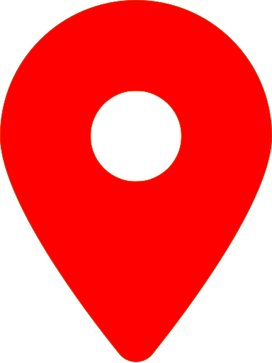

<!DOCTYPE html>
<head>
    <meta http-equiv="content-type" content="text/html; charset=UTF-8" />

        <script>
            L_NO_TOUCH = false;
            L_DISABLE_3D = false;
        </script>

    <style>html, body {width: 100%;height: 100%;margin: 0;padding: 0;}</style>
    <style>#map {position:absolute;top:0;bottom:0;right:0;left:0;}</style>
<script src="https://cdn.jsdelivr.net/npm/leaflet@1.6.0/dist/leaflet.js"></script>
<link rel="stylesheet" href="lib/EasyButton-master/src/easy-button.css">
<script src="lib/EasyButton-master/src/easy-button.js"></script>
    <script src="https://code.jquery.com/jquery-1.12.4.min.js"></script>
    <script src="https://maxcdn.bootstrapcdn.com/bootstrap/3.2.0/js/bootstrap.min.js"></script>
    <script src="https://cdnjs.cloudflare.com/ajax/libs/Leaflet.awesome-markers/2.0.2/leaflet.awesome-markers.js"></script>
    <link rel="stylesheet" href="https://cdn.jsdelivr.net/npm/leaflet@1.6.0/dist/leaflet.css"/>
    <link rel="stylesheet" href="https://maxcdn.bootstrapcdn.com/bootstrap/3.2.0/css/bootstrap.min.css"/>
    <link rel="stylesheet" href="https://maxcdn.bootstrapcdn.com/bootstrap/3.2.0/css/bootstrap-theme.min.css"/>
    <link rel="stylesheet" href="https://maxcdn.bootstrapcdn.com/font-awesome/4.6.3/css/font-awesome.min.css"/>
    <link rel="stylesheet" href="https://cdnjs.cloudflare.com/ajax/libs/Leaflet.awesome-markers/2.0.2/leaflet.awesome-markers.css"/>
    <link rel="stylesheet" href="https://cdn.jsdelivr.net/gh/python-visualization/folium/folium/templates/leaflet.awesome.rotate.min.css"/>

            <meta name="viewport" content="width=device-width,
                initial-scale=1.0, maximum-scale=1.0, user-scalable=no" />
            <style>
                #map_6120ef35b3b94201a6dce8c56f1f0ffb {
                    position: relative;
                    width: 100.0%;
                    height: 100.0%;
                    left: 0.0%;
                    top: 0.0%;
                }
            </style>

</head>
<body>

            <div class="folium-map" id="map_6120ef35b3b94201a6dce8c56f1f0ffb" ></div>

</body>
<script>


            var marker_22409ac9e42d4071a69691037f73f0c4 = L.marker(
                [45.34220987, 8.865593442],
                {}
            );


        var custom_icon_633f4e091c654044931c44e6ac08554c = L.icon({"iconSize": [30, 30], "iconUrl": "https://emojipedia-us.s3.dualstack.us-west-1.amazonaws.com/thumbs/160/microsoft/74/water-wave_1f30a.png"});
        marker_22409ac9e42d4071a69691037f73f0c4.setIcon(custom_icon_633f4e091c654044931c44e6ac08554c);


        var popup_39b32b4050f04f37af01c89acd5728f9 = L.popup({"maxWidth": "270"});


            var html_81349e77a6da40e787eb966f20de9616 = $(`<div id="html_81349e77a6da40e787eb966f20de9616" style="width: 100.0%; height: 100.0%;"><h1 style = "font-size: 30px;"><b>Acqua dolce e cassa dritta</b></h1><br><br>PLACEHOLDER<br><a href="mailto:info@ecologiaacustica.org?subject=PAESAGGIO SONORO --- [segnalazione] --- audio: Acqua dolce e cassa dritta"><i><br>Facci sapere cosa ne pensi di questo audio!</a><audio id="audio_GU_RAVE_TISIN_v3" loop> <source src="dati/GU_RAVE_TISIN_v3/ZOOM0028.ogg" type="audio/ogg"> </audio></div>`)[0];
            popup_39b32b4050f04f37af01c89acd5728f9.setContent(html_81349e77a6da40e787eb966f20de9616);


        marker_22409ac9e42d4071a69691037f73f0c4.bindPopup(popup_39b32b4050f04f37af01c89acd5728f9)
marker_22409ac9e42d4071a69691037f73f0c4.on('click', function (e) {this.openPopup(); document.getElementById('audio_GU_RAVE_TISIN_v3').play();});
        ;


            var marker_2d23aa96f22346d8b20fc1ac7c3ba8ae = L.marker(
                [45.28298, 8.865029],
                {}
            );


        var custom_icon_344c666c1ebc41d99b5c9584d1ff4539 = L.icon({"iconSize": [30, 30], "iconUrl": "https://emojipedia-us.s3.dualstack.us-west-1.amazonaws.com/thumbs/160/microsoft/74/small-airplane_1f6e9.png"});
        marker_2d23aa96f22346d8b20fc1ac7c3ba8ae.setIcon(custom_icon_344c666c1ebc41d99b5c9584d1ff4539);


        var popup_7b0479b2e5b0470db77e151fe640cf03 = L.popup({"maxWidth": "270"});


            var html_908a69ce5a4948e9a3fa3e5bebf68972 = $(`<div id="html_908a69ce5a4948e9a3fa3e5bebf68972" style="width: 100.0%; height: 100.0%;"><h1 style = "font-size: 30px;"><b>Aliante</b></h1><br><br>Accedere all'asse Z è un atto ricreativo e come insegna Flatlandia la realtà è una sola, mentre a cambiare è il punto di vista.<br /><br />Al posto di una elevazione sociale collettiva penso che per arrivare a una pace sia necessaria una elevazione dimensionale.<br><a href="mailto:info@ecologiaacustica.org?subject=PAESAGGIO SONORO --- [segnalazione] --- audio: Aliante"><i><br>Facci sapere cosa ne pensi di questo audio!</a><audio id="audio_GU_BATTAGLIA_SFORZESCA_2" loop> <source src="dati/GU_BATTAGLIA_SFORZESCA_2/ZOOM0029.ogg" type="audio/ogg"> </audio></div>`)[0];
            popup_7b0479b2e5b0470db77e151fe640cf03.setContent(html_908a69ce5a4948e9a3fa3e5bebf68972);


        marker_2d23aa96f22346d8b20fc1ac7c3ba8ae.bindPopup(popup_7b0479b2e5b0470db77e151fe640cf03)
marker_2d23aa96f22346d8b20fc1ac7c3ba8ae.on('click', function (e) {this.openPopup(); document.getElementById('audio_GU_BATTAGLIA_SFORZESCA_2').play();});
        ;


            var marker_522df9095bde4c7e96c80da5f7661158 = L.marker(
                [45.320629, 8.909743],
                {}
            );


        var custom_icon_6655d2de662d441197b9d5e5988e4b8a = L.icon({"iconSize": [30, 30], "iconUrl": "https://emojipedia-us.s3.dualstack.us-west-1.amazonaws.com/thumbs/60/microsoft/74/older-man_emoji-modifier-fitzpatrick-type-1-2_1f474-1f3fb_1f3fb.png"});
        marker_522df9095bde4c7e96c80da5f7661158.setIcon(custom_icon_6655d2de662d441197b9d5e5988e4b8a);


        var popup_41be9b4b44804025b444e7647c06b0e3 = L.popup({"maxWidth": "270"});


            var html_232629f1681848dfa72a8483729cc6b8 = $(`<div id="html_232629f1681848dfa72a8483729cc6b8" style="width: 100.0%; height: 100.0%;"><h1 style = "font-size: 30px;"><b>Anziani</b></h1><br>PLACEHOLDER<br /><br><a href="mailto:info@ecologiaacustica.org?subject=PAESAGGIO SONORO --- [segnalazione] --- audio: Anziani"><i><br>Facci sapere cosa ne pensi di questo audio!</a><audio id="audio_AL_AYALA 3" loop> <source src="dati/AL_AYALA 3/Copia di ayala vecchi che parlano.ogg" type="audio/ogg"> </audio></div>`)[0];
            popup_41be9b4b44804025b444e7647c06b0e3.setContent(html_232629f1681848dfa72a8483729cc6b8);


        marker_522df9095bde4c7e96c80da5f7661158.bindPopup(popup_41be9b4b44804025b444e7647c06b0e3)
marker_522df9095bde4c7e96c80da5f7661158.on('click', function (e) {this.openPopup(); document.getElementById('audio_AL_AYALA 3').play();});
        ;


            var marker_8f3d58f7095d4d7b9108a6ebb4bcd2cf = L.marker(
                [45.34300948, 8.862928168],
                {}
            );


        var custom_icon_535a689978b3472dac852042b999da20 = L.icon({"iconSize": [30, 30], "iconUrl": "https://emojipedia-us.s3.dualstack.us-west-1.amazonaws.com/thumbs/160/microsoft/74/bird_1f426.png"});
        marker_8f3d58f7095d4d7b9108a6ebb4bcd2cf.setIcon(custom_icon_535a689978b3472dac852042b999da20);


        var popup_7ac898aeb20c4aae8786e6c48c2a4a1c = L.popup({"maxWidth": "270"});


            var html_7b00ce97977a42a0bd6a32bd764cbf83 = $(`<div id="html_7b00ce97977a42a0bd6a32bd764cbf83" style="width: 100.0%; height: 100.0%;"><h1 style = "font-size: 30px;"><b>Birds of Rocca Petrella</b></h1><br><br>Qua si sente bene<br /><br />Avrei voluto scendere ma non era possibile a causa di una stramaledetta proprietà privata<br /><br />Tantè<br><a href="mailto:info@ecologiaacustica.org?subject=PAESAGGIO SONORO --- [segnalazione] --- audio: Birds of Rocca Petrella"><i><br>Facci sapere cosa ne pensi di questo audio!</a><audio id="audio_GU_ROCCA_PETRELLA" loop> <source src="dati/GU_ROCCA_PETRELLA/ZOOM0033.ogg" type="audio/ogg"> </audio></div>`)[0];
            popup_7ac898aeb20c4aae8786e6c48c2a4a1c.setContent(html_7b00ce97977a42a0bd6a32bd764cbf83);


        marker_8f3d58f7095d4d7b9108a6ebb4bcd2cf.bindPopup(popup_7ac898aeb20c4aae8786e6c48c2a4a1c)
marker_8f3d58f7095d4d7b9108a6ebb4bcd2cf.on('click', function (e) {this.openPopup(); document.getElementById('audio_GU_ROCCA_PETRELLA').play();});
        ;


            var marker_29cadc9a4ddc4bd580cd2572d641fb7d = L.marker(
                [45.292295, 8.864371],
                {}
            );


        var custom_icon_459246af61f04f8d846f875fe278beb3 = L.icon({"iconSize": [30, 30], "iconUrl": "https://emojipedia-us.s3.dualstack.us-west-1.amazonaws.com/thumbs/60/microsoft/74/pedestrian_1f6b6.png"});
        marker_29cadc9a4ddc4bd580cd2572d641fb7d.setIcon(custom_icon_459246af61f04f8d846f875fe278beb3);


        var popup_bdf5e72dd40e4153b1d699c076ceb3c0 = L.popup({"maxWidth": "270"});


            var html_29a0aca509b2499f9b68e7a0cd0ed10c = $(`<div id="html_29a0aca509b2499f9b68e7a0cd0ed10c" style="width: 100.0%; height: 100.0%;"><h1 style = "font-size: 30px;"><b>Cammino cammino cammino</b></h1><br><br>L'importanza di questo posto, per me, in questo momento è la possibilità di sentire chiaramente la geografia che scorre sotto i piedi.<br><a href="mailto:info@ecologiaacustica.org?subject=PAESAGGIO SONORO --- [segnalazione] --- audio: Cammino cammino cammino"><i><br>Facci sapere cosa ne pensi di questo audio!</a><audio id="audio_GU_SANTA_MARCITA" loop> <source src="dati/GU_SANTA_MARCITA/ZOOM0025.ogg" type="audio/ogg"> </audio></div>`)[0];
            popup_bdf5e72dd40e4153b1d699c076ceb3c0.setContent(html_29a0aca509b2499f9b68e7a0cd0ed10c);


        marker_29cadc9a4ddc4bd580cd2572d641fb7d.bindPopup(popup_bdf5e72dd40e4153b1d699c076ceb3c0)
marker_29cadc9a4ddc4bd580cd2572d641fb7d.on('click', function (e) {this.openPopup(); document.getElementById('audio_GU_SANTA_MARCITA').play();});
        ;


            var marker_060b0e4e2e85439cafad3167f5993c86 = L.marker(
                [45.33321272, 8.860613964],
                {}
            );


        var custom_icon_a5ea5deca69f4007b1ac90026595b948 = L.icon({"iconSize": [30, 30], "iconUrl": "https://emojipedia-us.s3.dualstack.us-west-1.amazonaws.com/thumbs/60/microsoft/74/bell_1f514.png"});
        marker_060b0e4e2e85439cafad3167f5993c86.setIcon(custom_icon_a5ea5deca69f4007b1ac90026595b948);


        var popup_be39fa6a379348cda8250d371394c587 = L.popup({"maxWidth": "270"});


            var html_6a90f8f9ac6f43d8aabef08824eaeb0f = $(`<div id="html_6a90f8f9ac6f43d8aabef08824eaeb0f" style="width: 100.0%; height: 100.0%;"><h1 style = "font-size: 30px;"><b>Campane</b></h1><br>PLACEHOLDER<br><a href="mailto:info@ecologiaacustica.org?subject=PAESAGGIO SONORO --- [segnalazione] --- audio: Campane"><i><br>Facci sapere cosa ne pensi di questo audio!</a><audio id="audio_GU_STRADA_MORABASSA" loop> <source src="dati/GU_STRADA_MORABASSA/ZOOM0032.ogg" type="audio/ogg"> </audio></div>`)[0];
            popup_be39fa6a379348cda8250d371394c587.setContent(html_6a90f8f9ac6f43d8aabef08824eaeb0f);


        marker_060b0e4e2e85439cafad3167f5993c86.bindPopup(popup_be39fa6a379348cda8250d371394c587)
marker_060b0e4e2e85439cafad3167f5993c86.on('click', function (e) {this.openPopup(); document.getElementById('audio_GU_STRADA_MORABASSA').play();});
        ;


            var marker_0d83a6f7c1ae47a4a4f06f2eeaae6f5d = L.marker(
                [45.316647, 8.857617],
                {}
            );


        var custom_icon_bb363c5d93b1467381d54b7d6e58cf7f = L.icon({"iconSize": [30, 30], "iconUrl": "https://emojipedia-us.s3.dualstack.us-west-1.amazonaws.com/thumbs/60/microsoft/74/bell_1f514.png"});
        marker_0d83a6f7c1ae47a4a4f06f2eeaae6f5d.setIcon(custom_icon_bb363c5d93b1467381d54b7d6e58cf7f);


        var popup_0ddc1098865740e19b486944578e3eed = L.popup({"maxWidth": "270"});


            var html_01050830af9a42e7a0a22f177efdb584 = $(`<div id="html_01050830af9a42e7a0a22f177efdb584" style="width: 100.0%; height: 100.0%;"><h1 style = "font-size: 30px;"><b>Campane</b></h1><br><br>PLACEHOLDER<br /><br><a href="mailto:info@ecologiaacustica.org?subject=PAESAGGIO SONORO --- [segnalazione] --- audio: Campane"><i><br>Facci sapere cosa ne pensi di questo audio!</a><audio id="audio_AL_CASTELLO CAMPANE" loop> <source src="dati/AL_CASTELLO CAMPANE/Copia di castello-campane.mp3" type="audio/mpeg"> </audio></div>`)[0];
            popup_0ddc1098865740e19b486944578e3eed.setContent(html_01050830af9a42e7a0a22f177efdb584);


        marker_0d83a6f7c1ae47a4a4f06f2eeaae6f5d.bindPopup(popup_0ddc1098865740e19b486944578e3eed)
marker_0d83a6f7c1ae47a4a4f06f2eeaae6f5d.on('click', function (e) {this.openPopup(); document.getElementById('audio_AL_CASTELLO CAMPANE').play();});
        ;


            var marker_c5e8b393ad7c4dd3b30397b7b770be7c = L.marker(
                [45.33114616, 8.861188604],
                {}
            );


        var custom_icon_ae0885beea4e40b1bf79ad9927f5276d = L.icon({"iconSize": [30, 30], "iconUrl": "https://emojipedia-us.s3.dualstack.us-west-1.amazonaws.com/thumbs/60/microsoft/74/pistol_1f52b.png"});
        marker_c5e8b393ad7c4dd3b30397b7b770be7c.setIcon(custom_icon_ae0885beea4e40b1bf79ad9927f5276d);


        var popup_64b19cca59834ef9bc96bd1b68c12976 = L.popup({"maxWidth": "270"});


            var html_255bb02940ca4079a7f0981f67320dad = $(`<div id="html_255bb02940ca4079a7f0981f67320dad" style="width: 100.0%; height: 100.0%;"><h1 style = "font-size: 30px;"><b>Cani e bang bang</b></h1><br>PLACEHOLDER<br><a href="mailto:info@ecologiaacustica.org?subject=PAESAGGIO SONORO --- [segnalazione] --- audio: Cani e bang bang"><i><br>Facci sapere cosa ne pensi di questo audio!</a><audio id="audio_GU_POLIGONO" loop> <source src="dati/GU_POLIGONO/ZOOM0031.ogg" type="audio/ogg"> </audio></div>`)[0];
            popup_64b19cca59834ef9bc96bd1b68c12976.setContent(html_255bb02940ca4079a7f0981f67320dad);


        marker_c5e8b393ad7c4dd3b30397b7b770be7c.bindPopup(popup_64b19cca59834ef9bc96bd1b68c12976)
marker_c5e8b393ad7c4dd3b30397b7b770be7c.on('click', function (e) {this.openPopup(); document.getElementById('audio_GU_POLIGONO').play();});
        ;


            var marker_ae9de37bb84849ebb2c55b6e6bbe7fbe = L.marker(
                [45.316389, 8.856819],
                {}
            );


        var custom_icon_bc0c49d416914d53b80d4b49bcb652f4 = L.icon({"iconSize": [30, 30], "iconUrl": "https://emojipedia-us.s3.dualstack.us-west-1.amazonaws.com/thumbs/60/microsoft/74/speaking-head-in-silhouette_1f5e3.png"});
        marker_ae9de37bb84849ebb2c55b6e6bbe7fbe.setIcon(custom_icon_bc0c49d416914d53b80d4b49bcb652f4);


        var popup_55e1832c7bfe4981a96fd8dfc1dfda81 = L.popup({"maxWidth": "270"});


            var html_18862c49edb8413c8043b68db5a508dd = $(`<div id="html_18862c49edb8413c8043b68db5a508dd" style="width: 100.0%; height: 100.0%;"><h1 style = "font-size: 30px;"><b>Castello alle 18</b></h1><br>PLACEHOLDER<br><a href="mailto:info@ecologiaacustica.org?subject=PAESAGGIO SONORO --- [segnalazione] --- audio: Castello alle 18"><i><br>Facci sapere cosa ne pensi di questo audio!</a><audio id="audio_AN_CASTELLO_ORE_18" loop> <source src="dati/AN_CASTELLO_ORE_18/castello ore 18.mp3" type="audio/mpeg"> </audio></div>`)[0];
            popup_55e1832c7bfe4981a96fd8dfc1dfda81.setContent(html_18862c49edb8413c8043b68db5a508dd);


        marker_ae9de37bb84849ebb2c55b6e6bbe7fbe.bindPopup(popup_55e1832c7bfe4981a96fd8dfc1dfda81)
marker_ae9de37bb84849ebb2c55b6e6bbe7fbe.on('click', function (e) {this.openPopup(); document.getElementById('audio_AN_CASTELLO_ORE_18').play();});
        ;


            var marker_c2cd605db65f49f6a8523259efe6a866 = L.marker(
                [45.33987551, 8.88500919],
                {}
            );


        var custom_icon_13895220b9f2489c9c7bc88d1e385144 = L.icon({"iconSize": [30, 30], "iconUrl": "https://emojipedia-us.s3.dualstack.us-west-1.amazonaws.com/thumbs/160/microsoft/153/swan_1f9a2.png"});
        marker_c2cd605db65f49f6a8523259efe6a866.setIcon(custom_icon_13895220b9f2489c9c7bc88d1e385144);


        var popup_bc63e33b81ea4243a6f830f001cac475 = L.popup({"maxWidth": "270"});


            var html_5b8bd4fad4cd40938da104493d5730c5 = $(`<div id="html_5b8bd4fad4cd40938da104493d5730c5" style="width: 100.0%; height: 100.0%;"><h1 style = "font-size: 30px;"><b>Cigni fx</b></h1><br>PLACEHOLDER<br><a href="mailto:info@ecologiaacustica.org?subject=PAESAGGIO SONORO --- [segnalazione] --- audio: Cigni fx"><i><br>Facci sapere cosa ne pensi di questo audio!</a><audio id="audio_GU_TICINO_v4" loop> <source src="dati/GU_TICINO_v4/ZOOM0027.ogg" type="audio/ogg"> </audio></div>`)[0];
            popup_bc63e33b81ea4243a6f830f001cac475.setContent(html_5b8bd4fad4cd40938da104493d5730c5);


        marker_c2cd605db65f49f6a8523259efe6a866.bindPopup(popup_bc63e33b81ea4243a6f830f001cac475)
marker_c2cd605db65f49f6a8523259efe6a866.on('click', function (e) {this.openPopup(); document.getElementById('audio_GU_TICINO_v4').play();});
        ;


            var marker_f3033800f4424d568896afa48e3215a4 = L.marker(
                [45.29236968, 8.884778005],
                {}
            );


        var custom_icon_05a72707a4e24351862572817edc4e55 = L.icon({"iconSize": [30, 30], "iconUrl": "https://emojipedia-us.s3.dualstack.us-west-1.amazonaws.com/thumbs/60/microsoft/74/fog_1f32b.png"});
        marker_f3033800f4424d568896afa48e3215a4.setIcon(custom_icon_05a72707a4e24351862572817edc4e55);


        var popup_e75cd2ab6db542e69d66b9855502333a = L.popup({"maxWidth": "270"});


            var html_0e255812818c4cc6a6583ae564b272f4 = $(`<div id="html_0e255812818c4cc6a6583ae564b272f4" style="width: 100.0%; height: 100.0%;"><h1 style = "font-size: 30px;"><b>Cimitero musicale</b></h1><br><br>Mi ringrazia. Provo a suonare live sotto il suo suggerimento insieme ad altri amici.<br />Non sapendo suonare mi concentro timidamente sul Re. Rinuncio e chiudo il piano.<br />Il sottofondo è musica ambient e sono attorniato dal mio datore di lavoro.<br><a href="mailto:info@ecologiaacustica.org?subject=PAESAGGIO SONORO --- [segnalazione] --- audio: Cimitero musicale"><i><br>Facci sapere cosa ne pensi di questo audio!</a><audio id="audio_GU_STRADA_REBUFFI_v3" loop> <source src="dati/GU_STRADA_REBUFFI_v3/ZOOM0028.ogg" type="audio/ogg"> </audio></div>`)[0];
            popup_e75cd2ab6db542e69d66b9855502333a.setContent(html_0e255812818c4cc6a6583ae564b272f4);


        marker_f3033800f4424d568896afa48e3215a4.bindPopup(popup_e75cd2ab6db542e69d66b9855502333a)
marker_f3033800f4424d568896afa48e3215a4.on('click', function (e) {this.openPopup(); document.getElementById('audio_GU_STRADA_REBUFFI_v3').play();});
        ;


            var marker_bd0b48e5e75a4ffb8d2f488d0f069086 = L.marker(
                [45.305114, 8.863925],
                {}
            );


        var custom_icon_11f856b0a3e04fac841fee2bfbf5fd67 = L.icon({"iconSize": [30, 30], "iconUrl": "https://emojipedia-us.s3.dualstack.us-west-1.amazonaws.com/thumbs/160/microsoft/74/video-camera_1f4f9.png"});
        marker_bd0b48e5e75a4ffb8d2f488d0f069086.setIcon(custom_icon_11f856b0a3e04fac841fee2bfbf5fd67);


        var popup_e87848476e3c40eca8788eed664510bd = L.popup({"maxWidth": "270"});


            var html_67b86dd142ca44de811f0047f03ae70b = $(`<div id="html_67b86dd142ca44de811f0047f03ae70b" style="width: 100.0%; height: 100.0%;"><h1 style = "font-size: 30px;"><b>Distopia</b></h1><br><br>Compiti a casa per te!<br /><br />Scrivici una storia con questi elementi:<br />ci sono una telecamera, un cane che abbaia, un uomo che tossisce<br /><br />Ma i compiti sono proprio necessari?<br><a href="mailto:info@ecologiaacustica.org?subject=PAESAGGIO SONORO --- [segnalazione] --- audio: Distopia"><i><br>Facci sapere cosa ne pensi di questo audio!</a><audio id="audio_GU_BERCLEDA_TELECAMERA" loop> <source src="dati/GU_BERCLEDA_TELECAMERA/ZOOM0023.ogg" type="audio/ogg"> </audio></div>`)[0];
            popup_e87848476e3c40eca8788eed664510bd.setContent(html_67b86dd142ca44de811f0047f03ae70b);


        marker_bd0b48e5e75a4ffb8d2f488d0f069086.bindPopup(popup_e87848476e3c40eca8788eed664510bd)
marker_bd0b48e5e75a4ffb8d2f488d0f069086.on('click', function (e) {this.openPopup(); document.getElementById('audio_GU_BERCLEDA_TELECAMERA').play();});
        ;


            var marker_867aedbc44b44277824157b7b4b01d7e = L.marker(
                [45.283238, 8.855915],
                {}
            );


        var custom_icon_80d1f5eaea424cda8295a1c35e6c8fa7 = L.icon({"iconSize": [30, 30], "iconUrl": "https://emojipedia-us.s3.dualstack.us-west-1.amazonaws.com/thumbs/160/microsoft/74/high-voltage-sign_26a1.png"});
        marker_867aedbc44b44277824157b7b4b01d7e.setIcon(custom_icon_80d1f5eaea424cda8295a1c35e6c8fa7);


        var popup_5227ab745a4940ea8514edce5114469f = L.popup({"maxWidth": "270"});


            var html_a0880f3eb7eb4fa597ae1ae629683769 = $(`<div id="html_a0880f3eb7eb4fa597ae1ae629683769" style="width: 100.0%; height: 100.0%;"><h1 style = "font-size: 30px;"><b>Energia pulita</b></h1><br><br>Quando ho deciso che facevo da me<br />cuore, batti il cuore<br />na,na,na,na<br />rumore, rumore<br />rumore, rumore!<br><a href="mailto:info@ecologiaacustica.org?subject=PAESAGGIO SONORO --- [segnalazione] --- audio: Energia pulita"><i><br>Facci sapere cosa ne pensi di questo audio!</a><audio id="audio_GU_BATTAGLIA_SFORZESCA_4" loop> <source src="dati/GU_BATTAGLIA_SFORZESCA_4/ZOOM0036.ogg" type="audio/ogg"> </audio></div>`)[0];
            popup_5227ab745a4940ea8514edce5114469f.setContent(html_a0880f3eb7eb4fa597ae1ae629683769);


        marker_867aedbc44b44277824157b7b4b01d7e.bindPopup(popup_5227ab745a4940ea8514edce5114469f)
marker_867aedbc44b44277824157b7b4b01d7e.on('click', function (e) {this.openPopup(); document.getElementById('audio_GU_BATTAGLIA_SFORZESCA_4').play();});
        ;


            var marker_158d04b62fac4b2aa3ed3ecc2e59acdb = L.marker(
                [45.315474, 8.854798],
                {}
            );


        var custom_icon_7c41d2fc32eb4ac69fa4c04cd884363f = L.icon({"iconSize": [30, 30], "iconUrl": "https://emojipedia-us.s3.dualstack.us-west-1.amazonaws.com/thumbs/160/microsoft/74/hammer-and-wrench_1f6e0.png"});
        marker_158d04b62fac4b2aa3ed3ecc2e59acdb.setIcon(custom_icon_7c41d2fc32eb4ac69fa4c04cd884363f);


        var popup_e9ab0d61e7974df7ade0c518608924c7 = L.popup({"maxWidth": "270"});


            var html_ef8402f1716e47419cd46ab73e8bc990 = $(`<div id="html_ef8402f1716e47419cd46ab73e8bc990" style="width: 100.0%; height: 100.0%;"><h1 style = "font-size: 30px;"><b>Ex Tribunale</b></h1><br>PLACEHOLDER<br><a href="mailto:info@ecologiaacustica.org?subject=PAESAGGIO SONORO --- [segnalazione] --- audio: Ex Tribunale"><i><br>Facci sapere cosa ne pensi di questo audio!</a><audio id="audio_AL_PIAZZETTA DAVANTI EX TRIBUNALE" loop> <source src="dati/AL_PIAZZETTA DAVANTI EX TRIBUNALE/Copia di piazzetta ex tribunale.ogg" type="audio/ogg"> </audio></div>`)[0];
            popup_e9ab0d61e7974df7ade0c518608924c7.setContent(html_ef8402f1716e47419cd46ab73e8bc990);


        marker_158d04b62fac4b2aa3ed3ecc2e59acdb.bindPopup(popup_e9ab0d61e7974df7ade0c518608924c7)
marker_158d04b62fac4b2aa3ed3ecc2e59acdb.on('click', function (e) {this.openPopup(); document.getElementById('audio_AL_PIAZZETTA DAVANTI EX TRIBUNALE').play();});
        ;


            var marker_74474292946640bda60767151260de63 = L.marker(
                [45.34069404, 8.878451395],
                {}
            );


        var custom_icon_9d33d957a7184138b24ff4040b5f4a87 = L.icon({"iconSize": [30, 30], "iconUrl": "https://emojipedia-us.s3.dualstack.us-west-1.amazonaws.com/thumbs/160/microsoft/74/water-wave_1f30a.png"});
        marker_74474292946640bda60767151260de63.setIcon(custom_icon_9d33d957a7184138b24ff4040b5f4a87);


        var popup_125bcf4ae10443b99c6fb75d75897395 = L.popup({"maxWidth": "270"});


            var html_155d1fd8e3c6432a8712fa54bbb29d1e = $(`<div id="html_155d1fd8e3c6432a8712fa54bbb29d1e" style="width: 100.0%; height: 100.0%;"><h1 style = "font-size: 30px;"><b>Fiume azzurro</b></h1><br>PLACEHOLDER<br><a href="mailto:info@ecologiaacustica.org?subject=PAESAGGIO SONORO --- [segnalazione] --- audio: Fiume azzurro"><i><br>Facci sapere cosa ne pensi di questo audio!</a><audio id="audio_GU_TICINO_v3" loop> <source src="dati/GU_TICINO_v3/ZOOM0026.ogg" type="audio/ogg"> </audio></div>`)[0];
            popup_125bcf4ae10443b99c6fb75d75897395.setContent(html_155d1fd8e3c6432a8712fa54bbb29d1e);


        marker_74474292946640bda60767151260de63.bindPopup(popup_125bcf4ae10443b99c6fb75d75897395)
marker_74474292946640bda60767151260de63.on('click', function (e) {this.openPopup(); document.getElementById('audio_GU_TICINO_v3').play();});
        ;


            var marker_b721248944d5425abd33c71e8a98ff04 = L.marker(
                [45.305648, 8.863469],
                {}
            );


        var custom_icon_ad7aadbfdce74c4d848528f95caeb2e6 = L.icon({"iconSize": [30, 30], "iconUrl": "https://emojipedia-us.s3.dualstack.us-west-1.amazonaws.com/thumbs/60/microsoft/74/gear_2699.png"});
        marker_b721248944d5425abd33c71e8a98ff04.setIcon(custom_icon_ad7aadbfdce74c4d848528f95caeb2e6);


        var popup_c662df29556c4347b3dcb23be2ecf6dc = L.popup({"maxWidth": "270"});


            var html_5d287570cd7b4b0a98f1462baa71b764 = $(`<div id="html_5d287570cd7b4b0a98f1462baa71b764" style="width: 100.0%; height: 100.0%;"><h1 style = "font-size: 30px;"><b>Fresa</b></h1><br>PLACEHOLDER<br /><br><a href="mailto:info@ecologiaacustica.org?subject=PAESAGGIO SONORO --- [segnalazione] --- audio: Fresa"><i><br>Facci sapere cosa ne pensi di questo audio!</a><audio id="audio_GU_BERCLEDA_INDUSTRIA" loop> <source src="dati/GU_BERCLEDA_INDUSTRIA/ZOOM0024.ogg" type="audio/ogg"> </audio></div>`)[0];
            popup_c662df29556c4347b3dcb23be2ecf6dc.setContent(html_5d287570cd7b4b0a98f1462baa71b764);


        marker_b721248944d5425abd33c71e8a98ff04.bindPopup(popup_c662df29556c4347b3dcb23be2ecf6dc)
marker_b721248944d5425abd33c71e8a98ff04.on('click', function (e) {this.openPopup(); document.getElementById('audio_GU_BERCLEDA_INDUSTRIA').play();});
        ;


            var marker_6c3ce971f46b4e4ca0d3891cb1d54c37 = L.marker(
                [45.319209, 8.911778],
                {}
            );


        var custom_icon_cdc1e1662fae4f809affb2b3a21bd2f3 = L.icon({"iconSize": [30, 30], "iconUrl": "https://emojipedia-us.s3.dualstack.us-west-1.amazonaws.com/thumbs/160/microsoft/74/bird_1f426.png"});
        marker_6c3ce971f46b4e4ca0d3891cb1d54c37.setIcon(custom_icon_cdc1e1662fae4f809affb2b3a21bd2f3);


        var popup_9d802fee34404bcdb38b38e88bb036bf = L.popup({"maxWidth": "270"});


            var html_9f85d9e1f0ee4844a0ddcc32e394a408 = $(`<div id="html_9f85d9e1f0ee4844a0ddcc32e394a408" style="width: 100.0%; height: 100.0%;"><h1 style = "font-size: 30px;"><b>Gallinelle</b></h1><br>PLACEHOLDER<br /><br><a href="mailto:info@ecologiaacustica.org?subject=PAESAGGIO SONORO --- [segnalazione] --- audio: Gallinelle"><i><br>Facci sapere cosa ne pensi di questo audio!</a><audio id="audio_AL_AYALA 2" loop> <source src="dati/AL_AYALA 2/Copia di gallinelle-ayala.mp3" type="audio/mpeg"> </audio></div>`)[0];
            popup_9d802fee34404bcdb38b38e88bb036bf.setContent(html_9f85d9e1f0ee4844a0ddcc32e394a408);


        marker_6c3ce971f46b4e4ca0d3891cb1d54c37.bindPopup(popup_9d802fee34404bcdb38b38e88bb036bf)
marker_6c3ce971f46b4e4ca0d3891cb1d54c37.on('click', function (e) {this.openPopup(); document.getElementById('audio_AL_AYALA 2').play();});
        ;


            var marker_3c492862c1234404b39593a963086312 = L.marker(
                [45.31211904, 8.860001045],
                {}
            );


        var custom_icon_9bf8b7d74eac44f697f16d0c956d35f5 = L.icon({"iconSize": [30, 30], "iconUrl": "https://emojipedia-us.s3.dualstack.us-west-1.amazonaws.com/thumbs/160/microsoft/74/water-wave_1f30a.png"});
        marker_3c492862c1234404b39593a963086312.setIcon(custom_icon_9bf8b7d74eac44f697f16d0c956d35f5);


        var popup_d921c514192347cf9d3782e06ca315d5 = L.popup({"maxWidth": "270"});


            var html_2e2f46082cce4984a73a8545f49ac490 = $(`<div id="html_2e2f46082cce4984a73a8545f49ac490" style="width: 100.0%; height: 100.0%;"><h1 style = "font-size: 30px;"><b>Giacchetta Canale</b></h1><br>PLACEHOLDER<br><a href="mailto:info@ecologiaacustica.org?subject=PAESAGGIO SONORO --- [segnalazione] --- audio: Giacchetta Canale"><i><br>Facci sapere cosa ne pensi di questo audio!</a><audio id="audio_GU_GIACCHETTA_CANALE" loop> <source src="dati/GU_GIACCHETTA_CANALE/ZOOM0027.ogg" type="audio/ogg"> </audio></div>`)[0];
            popup_d921c514192347cf9d3782e06ca315d5.setContent(html_2e2f46082cce4984a73a8545f49ac490);


        marker_3c492862c1234404b39593a963086312.bindPopup(popup_d921c514192347cf9d3782e06ca315d5)
marker_3c492862c1234404b39593a963086312.on('click', function (e) {this.openPopup(); document.getElementById('audio_GU_GIACCHETTA_CANALE').play();});
        ;


            var marker_3a064d1b9e7b405999d87ad24280dad4 = L.marker(
                [45.283684, 8.859826],
                {}
            );


        var custom_icon_c535bd3234484bbbb284afe83b25ff81 = L.icon({"iconSize": [30, 30], "iconUrl": "https://emojipedia-us.s3.dualstack.us-west-1.amazonaws.com/thumbs/60/microsoft/74/sparkles_2728.png"});
        marker_3a064d1b9e7b405999d87ad24280dad4.setIcon(custom_icon_c535bd3234484bbbb284afe83b25ff81);


        var popup_8475c6ca23aa4e25be4220c2a68723f6 = L.popup({"maxWidth": "270"});


            var html_297f1484dc494bf6ada2dd83159d7703 = $(`<div id="html_297f1484dc494bf6ada2dd83159d7703" style="width: 100.0%; height: 100.0%;"><h1 style = "font-size: 30px;"><b>Gioventù</b></h1><br><br>Ciao sono il te più giovane!<br />Hai voglia di fare un giretto?<br />Come? <br />Non hai tempo?<br><a href="mailto:info@ecologiaacustica.org?subject=PAESAGGIO SONORO --- [segnalazione] --- audio: Gioventù"><i><br>Facci sapere cosa ne pensi di questo audio!</a><audio id="audio_GU_BATTAGLIA_SFORZESCA_3" loop> <source src="dati/GU_BATTAGLIA_SFORZESCA_3/ZOOM0032.ogg" type="audio/ogg"> </audio></div>`)[0];
            popup_8475c6ca23aa4e25be4220c2a68723f6.setContent(html_297f1484dc494bf6ada2dd83159d7703);


        marker_3a064d1b9e7b405999d87ad24280dad4.bindPopup(popup_8475c6ca23aa4e25be4220c2a68723f6)
marker_3a064d1b9e7b405999d87ad24280dad4.on('click', function (e) {this.openPopup(); document.getElementById('audio_GU_BATTAGLIA_SFORZESCA_3').play();});
        ;


            var marker_107f89456a6444de90e9707353796c61 = L.marker(
                [45.284372, 8.8599],
                {}
            );


        var custom_icon_c1c3c43f0330497da21deb53cfc05181 = L.icon({"iconSize": [30, 30], "iconUrl": "https://emojipedia-us.s3.dualstack.us-west-1.amazonaws.com/thumbs/160/microsoft/74/bird_1f426.png"});
        marker_107f89456a6444de90e9707353796c61.setIcon(custom_icon_c1c3c43f0330497da21deb53cfc05181);


        var popup_479ae5df14884255b62ec46234d74822 = L.popup({"maxWidth": "270"});


            var html_f4425d7c262f49f7bdeddd76c88f9cca = $(`<div id="html_f4425d7c262f49f7bdeddd76c88f9cca" style="width: 100.0%; height: 100.0%;"><h1 style = "font-size: 30px;"><b>I ragazzi sono andati a casa</b></h1><br><br>Una piccola traslazione nello spazio.<br />Un'altra nel tempo.<br />Sono in grado di immaginare senza difficoltà uno scenario in cui il canale è in secca e i ragazzi divenuti adulti sono altrove.<br /><br />Sono rimasti gli uccellini come riferimento acustico del luogo.<br><a href="mailto:info@ecologiaacustica.org?subject=PAESAGGIO SONORO --- [segnalazione] --- audio: I ragazzi sono andati a casa"><i><br>Facci sapere cosa ne pensi di questo audio!</a><audio id="audio_GU_BATTAGLIA_SFORZESCA_5" loop> <source src="dati/GU_BATTAGLIA_SFORZESCA_5/ZOOM0037.ogg" type="audio/ogg"> </audio></div>`)[0];
            popup_479ae5df14884255b62ec46234d74822.setContent(html_f4425d7c262f49f7bdeddd76c88f9cca);


        marker_107f89456a6444de90e9707353796c61.bindPopup(popup_479ae5df14884255b62ec46234d74822)
marker_107f89456a6444de90e9707353796c61.on('click', function (e) {this.openPopup(); document.getElementById('audio_GU_BATTAGLIA_SFORZESCA_5').play();});
        ;


            var marker_c3b4889b78224061865fdb10324290a6 = L.marker(
                [45.314191, 8.854374],
                {}
            );


        var custom_icon_e0bb13f5341a45bea2703a6f2129b462 = L.icon({"iconSize": [30, 30], "iconUrl": "https://emojipedia-us.s3.dualstack.us-west-1.amazonaws.com/thumbs/160/microsoft/74/water-wave_1f30a.png"});
        marker_c3b4889b78224061865fdb10324290a6.setIcon(custom_icon_e0bb13f5341a45bea2703a6f2129b462);


        var popup_42c6b2ad3b5040f2aeb313aa3d49edf5 = L.popup({"maxWidth": "270"});


            var html_14f570ec9f8b42589a4e12feb4d44b80 = $(`<div id="html_14f570ec9f8b42589a4e12feb4d44b80" style="width: 100.0%; height: 100.0%;"><h1 style = "font-size: 30px;"><b>Il mulino di Via Mulini</b></h1><br>PLACEHOLDER<br><a href="mailto:info@ecologiaacustica.org?subject=PAESAGGIO SONORO --- [segnalazione] --- audio: Il mulino di Via Mulini"><i><br>Facci sapere cosa ne pensi di questo audio!</a><audio id="audio_AL_VIA_MULINI_MULINO" loop> <source src="dati/AL_VIA_MULINI_MULINO/mulino via mulini.mp3" type="audio/mpeg"> </audio></div>`)[0];
            popup_42c6b2ad3b5040f2aeb313aa3d49edf5.setContent(html_14f570ec9f8b42589a4e12feb4d44b80);


        marker_c3b4889b78224061865fdb10324290a6.bindPopup(popup_42c6b2ad3b5040f2aeb313aa3d49edf5)
marker_c3b4889b78224061865fdb10324290a6.on('click', function (e) {this.openPopup(); document.getElementById('audio_AL_VIA_MULINI_MULINO').play();});
        ;


            var marker_e2fc155ea6644263a62b5e767d82c370 = L.marker(
                [45.29917137, 8.905742693],
                {}
            );


        var custom_icon_bad39eaf3c7f434f8f52ebacd097487b = L.icon({"iconSize": [30, 30], "iconUrl": "https://emojipedia-us.s3.dualstack.us-west-1.amazonaws.com/thumbs/160/microsoft/74/bird_1f426.png"});
        marker_e2fc155ea6644263a62b5e767d82c370.setIcon(custom_icon_bad39eaf3c7f434f8f52ebacd097487b);


        var popup_86a4b1cb36da4c4181a030459a1c08ad = L.popup({"maxWidth": "270"});


            var html_fa9070fcb6d045789ae675d8647a27a1 = $(`<div id="html_fa9070fcb6d045789ae675d8647a27a1" style="width: 100.0%; height: 100.0%;"><h1 style = "font-size: 30px;"><b>Laghetto dei piccoli</b></h1><br>PLACEHOLDER<br><a href="mailto:info@ecologiaacustica.org?subject=PAESAGGIO SONORO --- [segnalazione] --- audio: Laghetto dei piccoli"><i><br>Facci sapere cosa ne pensi di questo audio!</a><audio id="audio_GU_LAGHETTO_DEI_PICCOLI" loop> <source src="dati/GU_LAGHETTO_DEI_PICCOLI/ZOOM0033.ogg" type="audio/ogg"> </audio></div>`)[0];
            popup_86a4b1cb36da4c4181a030459a1c08ad.setContent(html_fa9070fcb6d045789ae675d8647a27a1);


        marker_e2fc155ea6644263a62b5e767d82c370.bindPopup(popup_86a4b1cb36da4c4181a030459a1c08ad)
marker_e2fc155ea6644263a62b5e767d82c370.on('click', function (e) {this.openPopup(); document.getElementById('audio_GU_LAGHETTO_DEI_PICCOLI').play();});
        ;


            var marker_10778417d54146b4afec32e5b6e43d36 = L.marker(
                [45.302898, 8.934893],
                {}
            );


        var custom_icon_e0ede720e54f4f598f62871ae29ff7fe = L.icon({"iconSize": [30, 30], "iconUrl": "https://emojipedia-us.s3.dualstack.us-west-1.amazonaws.com/thumbs/160/microsoft/153/swan_1f9a2.png"});
        marker_10778417d54146b4afec32e5b6e43d36.setIcon(custom_icon_e0ede720e54f4f598f62871ae29ff7fe);


        var popup_c111ba6a12984a8099ff503563ba6d13 = L.popup({"maxWidth": "270"});


            var html_44eb009161c54dc38026aef919e945f2 = $(`<div id="html_44eb009161c54dc38026aef919e945f2" style="width: 100.0%; height: 100.0%;"><h1 style = "font-size: 30px;"><b>Lapide Boselli</b></h1><br>PLACEHOLDER<br /><br><a href="mailto:info@ecologiaacustica.org?subject=PAESAGGIO SONORO --- [segnalazione] --- audio: Lapide Boselli"><i><br>Facci sapere cosa ne pensi di questo audio!</a><audio id="audio_AL_LAPIDE BOSELLI" loop> <source src="dati/AL_LAPIDE BOSELLI/Copia di volo-cigni-lapide-boselli.mp3" type="audio/mpeg"> </audio></div>`)[0];
            popup_c111ba6a12984a8099ff503563ba6d13.setContent(html_44eb009161c54dc38026aef919e945f2);


        marker_10778417d54146b4afec32e5b6e43d36.bindPopup(popup_c111ba6a12984a8099ff503563ba6d13)
marker_10778417d54146b4afec32e5b6e43d36.on('click', function (e) {this.openPopup(); document.getElementById('audio_AL_LAPIDE BOSELLI').play();});
        ;


            var marker_7c9110b8f9174c08a69dcf7ec5dcfc6e = L.marker(
                [45.31646, 8.87454],
                {}
            );


        var custom_icon_1fc6976ffc904057a37c766e64c3218a = L.icon({"iconSize": [30, 30], "iconUrl": "https://emojipedia-us.s3.dualstack.us-west-1.amazonaws.com/thumbs/60/microsoft/74/roller-coaster_1f3a2.png"});
        marker_7c9110b8f9174c08a69dcf7ec5dcfc6e.setIcon(custom_icon_1fc6976ffc904057a37c766e64c3218a);


        var popup_c4299ba9268a4b5d9722a51cb63ad2f9 = L.popup({"maxWidth": "270"});


            var html_63d66480086a410e882bc1952b345e75 = $(`<div id="html_63d66480086a410e882bc1952b345e75" style="width: 100.0%; height: 100.0%;"><h1 style = "font-size: 30px;"><b>Luna Park</b></h1><br>PLACEHOLDER<br /><br><a href="mailto:info@ecologiaacustica.org?subject=PAESAGGIO SONORO --- [segnalazione] --- audio: Luna Park"><i><br>Facci sapere cosa ne pensi di questo audio!</a><audio id="audio_AL_LUNA PARK" loop> <source src="dati/AL_LUNA PARK/Copia di luna park.ogg" type="audio/ogg"> </audio></div>`)[0];
            popup_c4299ba9268a4b5d9722a51cb63ad2f9.setContent(html_63d66480086a410e882bc1952b345e75);


        marker_7c9110b8f9174c08a69dcf7ec5dcfc6e.bindPopup(popup_c4299ba9268a4b5d9722a51cb63ad2f9)
marker_7c9110b8f9174c08a69dcf7ec5dcfc6e.on('click', function (e) {this.openPopup(); document.getElementById('audio_AL_LUNA PARK').play();});
        ;


            var marker_13b1125cda024ff3a923bcd7abcd330e = L.marker(
                [45.288236, 8.904653],
                {}
            );


        var custom_icon_21317a75ba824916aee8ba86c31b460e = L.icon({"iconSize": [30, 30], "iconUrl": "https://emojipedia-us.s3.dualstack.us-west-1.amazonaws.com/thumbs/160/microsoft/74/water-wave_1f30a.png"});
        marker_13b1125cda024ff3a923bcd7abcd330e.setIcon(custom_icon_21317a75ba824916aee8ba86c31b460e);


        var popup_028e9bedba674d3fb5c33075cc06199a = L.popup({"maxWidth": "270"});


            var html_91d05fe42ae141f5a81753a503c01f85 = $(`<div id="html_91d05fe42ae141f5a81753a503c01f85" style="width: 100.0%; height: 100.0%;"><h1 style = "font-size: 30px;"><b>Marcite</b></h1><br><br>PLACEHOLDER<br /><br><a href="mailto:info@ecologiaacustica.org?subject=PAESAGGIO SONORO --- [segnalazione] --- audio: Marcite"><i><br>Facci sapere cosa ne pensi di questo audio!</a><audio id="audio_AL_SFORZESCA MARCITE" loop> <source src="dati/AL_SFORZESCA MARCITE/Copia di marcite-sforzesca.mp3" type="audio/mpeg"> </audio></div>`)[0];
            popup_028e9bedba674d3fb5c33075cc06199a.setContent(html_91d05fe42ae141f5a81753a503c01f85);


        marker_13b1125cda024ff3a923bcd7abcd330e.bindPopup(popup_028e9bedba674d3fb5c33075cc06199a)
marker_13b1125cda024ff3a923bcd7abcd330e.on('click', function (e) {this.openPopup(); document.getElementById('audio_AL_SFORZESCA MARCITE').play();});
        ;


            var marker_38a8ebfc7ec84c7b8197e0096f0a2956 = L.marker(
                [45.325122, 8.850307],
                {}
            );


        var custom_icon_d6896b4cf3ff49bca55d3c19600cfb57 = L.icon({"iconSize": [30, 30], "iconUrl": "https://emojipedia-us.s3.dualstack.us-west-1.amazonaws.com/thumbs/60/microsoft/74/bell_1f514.png"});
        marker_38a8ebfc7ec84c7b8197e0096f0a2956.setIcon(custom_icon_d6896b4cf3ff49bca55d3c19600cfb57);


        var popup_e092ea8948f4489f9f11b97ea1d20d2b = L.popup({"maxWidth": "270"});


            var html_4c6b6caa539c43889c4fa4e53ae5d02b = $(`<div id="html_4c6b6caa539c43889c4fa4e53ae5d02b" style="width: 100.0%; height: 100.0%;"><h1 style = "font-size: 30px;"><b>Maria Addolorata</b></h1><br><br>I) Profezia dell'anziano Simeone sul Bambino Gesù<br />II) La fuga in Egitto della Sacra famiglia<br />III) La perdita del Bambin Gesù nel Tempio<br />IV) L'incontro di Maria e Gesù lungo la Via Crucis<br />V) Maria ai piedi della croce dove Gesù è crocifisso<br />VI) Maria accoglie nelle sue braccia Gesù morto<br />VII) Maria vede seppellire Gesù<br><a href="mailto:info@ecologiaacustica.org?subject=PAESAGGIO SONORO --- [segnalazione] --- audio: Maria Addolorata"><i><br>Facci sapere cosa ne pensi di questo audio!</a><audio id="audio_GU_ADDOLORATA" loop> <source src="dati/GU_ADDOLORATA/ZOOM0041.ogg" type="audio/ogg"> </audio></div>`)[0];
            popup_e092ea8948f4489f9f11b97ea1d20d2b.setContent(html_4c6b6caa539c43889c4fa4e53ae5d02b);


        marker_38a8ebfc7ec84c7b8197e0096f0a2956.bindPopup(popup_e092ea8948f4489f9f11b97ea1d20d2b)
marker_38a8ebfc7ec84c7b8197e0096f0a2956.on('click', function (e) {this.openPopup(); document.getElementById('audio_GU_ADDOLORATA').play();});
        ;


            var marker_24904cc36a3348b1b79805396136c222 = L.marker(
                [45.31246512, 8.883821165],
                {}
            );


        var custom_icon_9739d458b5d247acb5b26a393733a2e4 = L.icon({"iconSize": [30, 30], "iconUrl": "https://emojipedia-us.s3.dualstack.us-west-1.amazonaws.com/thumbs/60/microsoft/74/cat_1f408.png"});
        marker_24904cc36a3348b1b79805396136c222.setIcon(custom_icon_9739d458b5d247acb5b26a393733a2e4);


        var popup_d293dd2ee6fa4a5ababc00fddebb30ed = L.popup({"maxWidth": "270"});


            var html_56ae18d3f85f4532ba93b2accddf749c = $(`<div id="html_56ae18d3f85f4532ba93b2accddf749c" style="width: 100.0%; height: 100.0%;"><h1 style = "font-size: 30px;"><b>Miciopolis</b></h1><br>PLACEHOLDER<br><a href="mailto:info@ecologiaacustica.org?subject=PAESAGGIO SONORO --- [segnalazione] --- audio: Miciopolis"><i><br>Facci sapere cosa ne pensi di questo audio!</a><audio id="audio_GU_MICIOPOLIS" loop> <source src="dati/GU_MICIOPOLIS/ZOOM0022.ogg" type="audio/ogg"> </audio></div>`)[0];
            popup_d293dd2ee6fa4a5ababc00fddebb30ed.setContent(html_56ae18d3f85f4532ba93b2accddf749c);


        marker_24904cc36a3348b1b79805396136c222.bindPopup(popup_d293dd2ee6fa4a5ababc00fddebb30ed)
marker_24904cc36a3348b1b79805396136c222.on('click', function (e) {this.openPopup(); document.getElementById('audio_GU_MICIOPOLIS').play();});
        ;


            var marker_5b11764dcc9d4d8b9a24a43d1caee1ed = L.marker(
                [45.316545, 8.856341],
                {}
            );


        var custom_icon_d06b4d143d71414581c14ad9285fa85e = L.icon({"iconSize": [30, 30], "iconUrl": "https://emojipedia-us.s3.dualstack.us-west-1.amazonaws.com/thumbs/160/microsoft/74/bird_1f426.png"});
        marker_5b11764dcc9d4d8b9a24a43d1caee1ed.setIcon(custom_icon_d06b4d143d71414581c14ad9285fa85e);


        var popup_b20ced26ff1a430eb47e423792fa97fd = L.popup({"maxWidth": "270"});


            var html_227cc379799e4ff594d712870893c6d3 = $(`<div id="html_227cc379799e4ff594d712870893c6d3" style="width: 100.0%; height: 100.0%;"><h1 style = "font-size: 30px;"><b>Nido vuoto</b></h1><br>PLACEHOLDER<br><a href="mailto:info@ecologiaacustica.org?subject=PAESAGGIO SONORO --- [segnalazione] --- audio: Nido vuoto"><i><br>Facci sapere cosa ne pensi di questo audio!</a><audio id="audio_AL_CAVALLERIZZA" loop> <source src="dati/AL_CAVALLERIZZA/Copia di cavallerizza-senza-bimbi-ma-con-condizionatore-iniziale-e-non.mp3" type="audio/mpeg"> </audio></div>`)[0];
            popup_b20ced26ff1a430eb47e423792fa97fd.setContent(html_227cc379799e4ff594d712870893c6d3);


        marker_5b11764dcc9d4d8b9a24a43d1caee1ed.bindPopup(popup_b20ced26ff1a430eb47e423792fa97fd)
marker_5b11764dcc9d4d8b9a24a43d1caee1ed.on('click', function (e) {this.openPopup(); document.getElementById('audio_AL_CAVALLERIZZA').play();});
        ;


            var marker_6bb33dea0d8e4cbc940ea5bb3baeee14 = L.marker(
                [45.319865, 8.910479],
                {}
            );


        var custom_icon_b33d12b73ca54342aa8948d16acd06fc = L.icon({"iconSize": [30, 30], "iconUrl": "https://emojipedia-us.s3.dualstack.us-west-1.amazonaws.com/thumbs/160/microsoft/74/duck_1f986.png"});
        marker_6bb33dea0d8e4cbc940ea5bb3baeee14.setIcon(custom_icon_b33d12b73ca54342aa8948d16acd06fc);


        var popup_ad2ef082615a4ee9a0e9edfa32434bbc = L.popup({"maxWidth": "270"});


            var html_63146514ac6e4d728db69d37e0d7a2a4 = $(`<div id="html_63146514ac6e4d728db69d37e0d7a2a4" style="width: 100.0%; height: 100.0%;"><h1 style = "font-size: 30px;"><b>Papere</b></h1><br><br>PLACEHOLDER<br /><br><a href="mailto:info@ecologiaacustica.org?subject=PAESAGGIO SONORO --- [segnalazione] --- audio: Papere"><i><br>Facci sapere cosa ne pensi di questo audio!</a><audio id="audio_AL_AYALA" loop> <source src="dati/AL_AYALA/Copia di ayala-papere.mp3" type="audio/mpeg"> </audio></div>`)[0];
            popup_ad2ef082615a4ee9a0e9edfa32434bbc.setContent(html_63146514ac6e4d728db69d37e0d7a2a4);


        marker_6bb33dea0d8e4cbc940ea5bb3baeee14.bindPopup(popup_ad2ef082615a4ee9a0e9edfa32434bbc)
marker_6bb33dea0d8e4cbc940ea5bb3baeee14.on('click', function (e) {this.openPopup(); document.getElementById('audio_AL_AYALA').play();});
        ;


            var marker_231437c1b27f4d7a82f006804c99d5f9 = L.marker(
                [45.313775, 8.856216],
                {}
            );


        var custom_icon_dadc88837818424c8c61189221d2e764 = L.icon({"iconSize": [30, 30], "iconUrl": "https://emojipedia-us.s3.dualstack.us-west-1.amazonaws.com/thumbs/160/microsoft/74/bird_1f426.png"});
        marker_231437c1b27f4d7a82f006804c99d5f9.setIcon(custom_icon_dadc88837818424c8c61189221d2e764);


        var popup_00851a7d0c3546f289f908f6a866965c = L.popup({"maxWidth": "270"});


            var html_9ee34392d72849da94c9ad052f5db19e = $(`<div id="html_9ee34392d72849da94c9ad052f5db19e" style="width: 100.0%; height: 100.0%;"><h1 style = "font-size: 30px;"><b>Parchetto</b></h1><br>PLACEHOLDER<br><a href="mailto:info@ecologiaacustica.org?subject=PAESAGGIO SONORO --- [segnalazione] --- audio: Parchetto"><i><br>Facci sapere cosa ne pensi di questo audio!</a><audio id="audio_AL_PARCO VIA DELLA COSTA" loop> <source src="dati/AL_PARCO VIA DELLA COSTA/Copia di parchetto via della costa.ogg" type="audio/ogg"> </audio></div>`)[0];
            popup_00851a7d0c3546f289f908f6a866965c.setContent(html_9ee34392d72849da94c9ad052f5db19e);


        marker_231437c1b27f4d7a82f006804c99d5f9.bindPopup(popup_00851a7d0c3546f289f908f6a866965c)
marker_231437c1b27f4d7a82f006804c99d5f9.on('click', function (e) {this.openPopup(); document.getElementById('audio_AL_PARCO VIA DELLA COSTA').play();});
        ;


            var marker_bcb8912c7d674bd49f8b65fff1314933 = L.marker(
                [45.3200354, 8.855686002],
                {}
            );


        var custom_icon_26e0efea646d466c9679f7072b4b7607 = L.icon({"iconSize": [30, 30], "iconUrl": "https://emojipedia-us.s3.dualstack.us-west-1.amazonaws.com/thumbs/60/microsoft/74/automobile_1f697.png"});
        marker_bcb8912c7d674bd49f8b65fff1314933.setIcon(custom_icon_26e0efea646d466c9679f7072b4b7607);


        var popup_18c9d1c6419049aebbb953516bab9667 = L.popup({"maxWidth": "270"});


            var html_f2db2c72b4804fe78a12bf74692e3f57 = $(`<div id="html_f2db2c72b4804fe78a12bf74692e3f57" style="width: 100.0%; height: 100.0%;"><h1 style = "font-size: 30px;"><b>Pavè</b></h1><br>PLACEHOLDER<br><a href="mailto:info@ecologiaacustica.org?subject=PAESAGGIO SONORO --- [segnalazione] --- audio: Pavè"><i><br>Facci sapere cosa ne pensi di questo audio!</a><audio id="audio_GU_MADONNA_7_DOLORI" loop> <source src="dati/GU_MADONNA_7_DOLORI/ZOOM0023.ogg" type="audio/ogg"> </audio></div>`)[0];
            popup_18c9d1c6419049aebbb953516bab9667.setContent(html_f2db2c72b4804fe78a12bf74692e3f57);


        marker_bcb8912c7d674bd49f8b65fff1314933.bindPopup(popup_18c9d1c6419049aebbb953516bab9667)
marker_bcb8912c7d674bd49f8b65fff1314933.on('click', function (e) {this.openPopup(); document.getElementById('audio_GU_MADONNA_7_DOLORI').play();});
        ;


            var marker_2c15268c6d71429a8485c980cccbc7ff = L.marker(
                [45.318815, 8.80616],
                {}
            );


        var custom_icon_3c01c41e8f3642c19a1a719b18d5ee7d = L.icon({"iconSize": [30, 30], "iconUrl": "https://emojipedia-us.s3.dualstack.us-west-1.amazonaws.com/thumbs/160/microsoft/74/water-wave_1f30a.png"});
        marker_2c15268c6d71429a8485c980cccbc7ff.setIcon(custom_icon_3c01c41e8f3642c19a1a719b18d5ee7d);


        var popup_fa431aa6c7f142648e8160fbe932f94e = L.popup({"maxWidth": "270"});


            var html_d3aed7f4ad8a4f4e8504f6d3d6fd8556 = $(`<div id="html_d3aed7f4ad8a4f4e8504f6d3d6fd8556" style="width: 100.0%; height: 100.0%;"><h1 style = "font-size: 30px;"><b>Piccolini</b></h1><br><br>PLACEHOLDER<br /><br><a href="mailto:info@ecologiaacustica.org?subject=PAESAGGIO SONORO --- [segnalazione] --- audio: Piccolini"><i><br>Facci sapere cosa ne pensi di questo audio!</a><audio id="audio_AL_TERDOPPIO PICCOLINI" loop> <source src="dati/AL_TERDOPPIO PICCOLINI/Copia di st. terdoppio piccolini.ogg" type="audio/ogg"> </audio></div>`)[0];
            popup_fa431aa6c7f142648e8160fbe932f94e.setContent(html_d3aed7f4ad8a4f4e8504f6d3d6fd8556);


        marker_2c15268c6d71429a8485c980cccbc7ff.bindPopup(popup_fa431aa6c7f142648e8160fbe932f94e)
marker_2c15268c6d71429a8485c980cccbc7ff.on('click', function (e) {this.openPopup(); document.getElementById('audio_AL_TERDOPPIO PICCOLINI').play();});
        ;


            var marker_3c400b40311a4d5cbc2c6caa65a8c82a = L.marker(
                [45.3230625, 8.850245651],
                {}
            );


        var custom_icon_3caecd1861bb40d2a40e475c877287a4 = L.icon({"iconSize": [30, 30], "iconUrl": "https://emojipedia-us.s3.dualstack.us-west-1.amazonaws.com/thumbs/160/microsoft/74/motor-scooter_1f6f5.png"});
        marker_3c400b40311a4d5cbc2c6caa65a8c82a.setIcon(custom_icon_3caecd1861bb40d2a40e475c877287a4);


        var popup_8764e5e92a76483eb1d1cc3b33f33f75 = L.popup({"maxWidth": "270"});


            var html_8cf0144a244e4c44ad28dd5c77ab4d9a = $(`<div id="html_8cf0144a244e4c44ad28dd5c77ab4d9a" style="width: 100.0%; height: 100.0%;"><h1 style = "font-size: 30px;"><b>Pizzeria</b></h1><br>PLACEHOLDER<br><a href="mailto:info@ecologiaacustica.org?subject=PAESAGGIO SONORO --- [segnalazione] --- audio: Pizzeria"><i><br>Facci sapere cosa ne pensi di questo audio!</a><audio id="audio_GU_VIALE_MONTEGRAPPA_PIZZERIA" loop> <source src="dati/GU_VIALE_MONTEGRAPPA_PIZZERIA/pizzeria.ogg" type="audio/ogg"> </audio></div>`)[0];
            popup_8764e5e92a76483eb1d1cc3b33f33f75.setContent(html_8cf0144a244e4c44ad28dd5c77ab4d9a);


        marker_3c400b40311a4d5cbc2c6caa65a8c82a.bindPopup(popup_8764e5e92a76483eb1d1cc3b33f33f75)
marker_3c400b40311a4d5cbc2c6caa65a8c82a.on('click', function (e) {this.openPopup(); document.getElementById('audio_GU_VIALE_MONTEGRAPPA_PIZZERIA').play();});
        ;


            var marker_e1c80251f3f643a389e4710f8481c3ee = L.marker(
                [45.315783, 8.856105],
                {}
            );


        var custom_icon_9ee353a677c7461fb71e8f929f7f6a52 = L.icon({"iconSize": [30, 30], "iconUrl": "https://emojipedia-us.s3.dualstack.us-west-1.amazonaws.com/thumbs/60/microsoft/74/speaking-head-in-silhouette_1f5e3.png"});
        marker_e1c80251f3f643a389e4710f8481c3ee.setIcon(custom_icon_9ee353a677c7461fb71e8f929f7f6a52);


        var popup_823f64fea7254dacb52046694fb44fa8 = L.popup({"maxWidth": "270"});


            var html_2a37869826074992881f82921ea62245 = $(`<div id="html_2a37869826074992881f82921ea62245" style="width: 100.0%; height: 100.0%;"><h1 style = "font-size: 30px;"><b>Portone</b></h1><br>PLACEHOLDER<br><a href="mailto:info@ecologiaacustica.org?subject=PAESAGGIO SONORO --- [segnalazione] --- audio: Portone"><i><br>Facci sapere cosa ne pensi di questo audio!</a><audio id="audio_AN_PORTONE" loop> <source src="dati/AN_PORTONE/portone.mp3" type="audio/mpeg"> </audio></div>`)[0];
            popup_823f64fea7254dacb52046694fb44fa8.setContent(html_2a37869826074992881f82921ea62245);


        marker_e1c80251f3f643a389e4710f8481c3ee.bindPopup(popup_823f64fea7254dacb52046694fb44fa8)
marker_e1c80251f3f643a389e4710f8481c3ee.on('click', function (e) {this.openPopup(); document.getElementById('audio_AN_PORTONE').play();});
        ;


            var marker_a5771e38911743f99468cada395753ec = L.marker(
                [45.34084406, 8.867725439],
                {}
            );


        var custom_icon_c926737086fb4e89943425ee2cc0ccb9 = L.icon({"iconSize": [30, 30], "iconUrl": "https://emojipedia-us.s3.dualstack.us-west-1.amazonaws.com/thumbs/60/microsoft/74/speaker-with-three-sound-waves_1f50a.png"});
        marker_a5771e38911743f99468cada395753ec.setIcon(custom_icon_c926737086fb4e89943425ee2cc0ccb9);


        var popup_eb5bf21fc30f464f8e65bc9caa0a7cf7 = L.popup({"maxWidth": "270"});


            var html_8aa1f9de774d4ddc9eaaa46c4a7e3d80 = $(`<div id="html_8aa1f9de774d4ddc9eaaa46c4a7e3d80" style="width: 100.0%; height: 100.0%;"><h1 style = "font-size: 30px;"><b>Rave a Ticino</b></h1><br><br>PLACEHOLDER<br><a href="mailto:info@ecologiaacustica.org?subject=PAESAGGIO SONORO --- [segnalazione] --- audio: Rave a Ticino"><i><br>Facci sapere cosa ne pensi di questo audio!</a><audio id="audio_GU_RAVE_TISIN_v1" loop> <source src="dati/GU_RAVE_TISIN_v1/ZOOM0025.ogg" type="audio/ogg"> </audio></div>`)[0];
            popup_eb5bf21fc30f464f8e65bc9caa0a7cf7.setContent(html_8aa1f9de774d4ddc9eaaa46c4a7e3d80);


        marker_a5771e38911743f99468cada395753ec.bindPopup(popup_eb5bf21fc30f464f8e65bc9caa0a7cf7)
marker_a5771e38911743f99468cada395753ec.on('click', function (e) {this.openPopup(); document.getElementById('audio_GU_RAVE_TISIN_v1').play();});
        ;


            var marker_da17ddd008594b97a2880f9e488b47b4 = L.marker(
                [45.286434, 8.859578],
                {}
            );


        var custom_icon_a3bf00a398cb42978087f21bc52fe6ef = L.icon({"iconSize": [30, 30], "iconUrl": "https://emojipedia-us.s3.dualstack.us-west-1.amazonaws.com/thumbs/160/microsoft/74/water-wave_1f30a.png"});
        marker_da17ddd008594b97a2880f9e488b47b4.setIcon(custom_icon_a3bf00a398cb42978087f21bc52fe6ef);


        var popup_a217ee8e78474ed8b36bcb377e078a97 = L.popup({"maxWidth": "270"});


            var html_873ca5a1cf804d66a7957159e2f9ac93 = $(`<div id="html_873ca5a1cf804d66a7957159e2f9ac93" style="width: 100.0%; height: 100.0%;"><h1 style = "font-size: 30px;"><b>Roggia</b></h1><br><br>glu glu glu<br><a href="mailto:info@ecologiaacustica.org?subject=PAESAGGIO SONORO --- [segnalazione] --- audio: Roggia"><i><br>Facci sapere cosa ne pensi di questo audio!</a><audio id="audio_GU_BATTAGLIA_SFORZESCA_6" loop> <source src="dati/GU_BATTAGLIA_SFORZESCA_6/ZOOM0038.ogg" type="audio/ogg"> </audio></div>`)[0];
            popup_a217ee8e78474ed8b36bcb377e078a97.setContent(html_873ca5a1cf804d66a7957159e2f9ac93);


        marker_da17ddd008594b97a2880f9e488b47b4.bindPopup(popup_a217ee8e78474ed8b36bcb377e078a97)
marker_da17ddd008594b97a2880f9e488b47b4.on('click', function (e) {this.openPopup(); document.getElementById('audio_GU_BATTAGLIA_SFORZESCA_6').play();});
        ;


            var marker_17db3bb4e29d41f697b180bb1287f180 = L.marker(
                [45.318301, 8.858539],
                {}
            );


        var custom_icon_147418466a764353b2b4e18e9e0ce290 = L.icon({"iconSize": [30, 30], "iconUrl": "https://emojipedia-us.s3.dualstack.us-west-1.amazonaws.com/thumbs/60/microsoft/74/speaking-head-in-silhouette_1f5e3.png"});
        marker_17db3bb4e29d41f697b180bb1287f180.setIcon(custom_icon_147418466a764353b2b4e18e9e0ce290);


        var popup_8fbc91e4cc9a40009e166d34b42adc5f = L.popup({"maxWidth": "270"});


            var html_56731c6be6284839aac2c2a61e9e2992 = $(`<div id="html_56731c6be6284839aac2c2a61e9e2992" style="width: 100.0%; height: 100.0%;"><h1 style = "font-size: 30px;"><b>San Dionigi</b></h1><br>PLACEHOLDER<br><a href="mailto:info@ecologiaacustica.org?subject=PAESAGGIO SONORO --- [segnalazione] --- audio: San Dionigi"><i><br>Facci sapere cosa ne pensi di questo audio!</a><audio id="audio_AL_PIAZZETTA SAN DIONIGI" loop> <source src="dati/AL_PIAZZETTA SAN DIONIGI/Copia di piazza san dionigi.ogg" type="audio/ogg"> </audio></div>`)[0];
            popup_8fbc91e4cc9a40009e166d34b42adc5f.setContent(html_56731c6be6284839aac2c2a61e9e2992);


        marker_17db3bb4e29d41f697b180bb1287f180.bindPopup(popup_8fbc91e4cc9a40009e166d34b42adc5f)
marker_17db3bb4e29d41f697b180bb1287f180.on('click', function (e) {this.openPopup(); document.getElementById('audio_AL_PIAZZETTA SAN DIONIGI').play();});
        ;


            var marker_27fb3aa7b26d4e1ebf4b124987c4135f = L.marker(
                [45.315874, 8.858551],
                {}
            );


        var custom_icon_9fb600b41adc4e8e97df022f54b56657 = L.icon({"iconSize": [30, 30], "iconUrl": "https://emojipedia-us.s3.dualstack.us-west-1.amazonaws.com/thumbs/60/microsoft/309/woman-walking_1f6b6-200d-2640-fe0f.png"});
        marker_27fb3aa7b26d4e1ebf4b124987c4135f.setIcon(custom_icon_9fb600b41adc4e8e97df022f54b56657);


        var popup_fc6c5f95b4a240c48e23210cccc09f8c = L.popup({"maxWidth": "270"});


            var html_8de794fc440f4befae9a0f1449452daf = $(`<div id="html_8de794fc440f4befae9a0f1449452daf" style="width: 100.0%; height: 100.0%;"><h1 style = "font-size: 30px;"><b>Strada coperta</b></h1><br><br>PLACEHOLDER<br /><br><a href="mailto:info@ecologiaacustica.org?subject=PAESAGGIO SONORO --- [segnalazione] --- audio: Strada coperta"><i><br>Facci sapere cosa ne pensi di questo audio!</a><audio id="audio_AL_STRADA COPERTA" loop> <source src="dati/AL_STRADA COPERTA/Copia di strada-coperta-sopra-portone.mp3" type="audio/mpeg"> </audio></div>`)[0];
            popup_fc6c5f95b4a240c48e23210cccc09f8c.setContent(html_8de794fc440f4befae9a0f1449452daf);


        marker_27fb3aa7b26d4e1ebf4b124987c4135f.bindPopup(popup_fc6c5f95b4a240c48e23210cccc09f8c)
marker_27fb3aa7b26d4e1ebf4b124987c4135f.on('click', function (e) {this.openPopup(); document.getElementById('audio_AL_STRADA COPERTA').play();});
        ;


            var marker_e8df96e3976f417d8a39b56a1b099193 = L.marker(
                [45.292744, 8.862007],
                {}
            );


        var custom_icon_e23c7d59cbef42d6a5d3fdd27325d9f6 = L.icon({"iconSize": [30, 30], "iconUrl": "https://emojipedia-us.s3.dualstack.us-west-1.amazonaws.com/thumbs/60/microsoft/74/fallen-leaf_1f342.png"});
        marker_e8df96e3976f417d8a39b56a1b099193.setIcon(custom_icon_e23c7d59cbef42d6a5d3fdd27325d9f6);


        var popup_fe0cfe7e75c745598a2798e56e95c02a = L.popup({"maxWidth": "270"});


            var html_57e2ea87b1a54aee9e6690b7ceb51ca4 = $(`<div id="html_57e2ea87b1a54aee9e6690b7ceb51ca4" style="width: 100.0%; height: 100.0%;"><h1 style = "font-size: 30px;"><b>Strada delle ripe alte</b></h1><br><br>Lo senti come mi batte forte il tuo vento?<br><a href="mailto:info@ecologiaacustica.org?subject=PAESAGGIO SONORO --- [segnalazione] --- audio: Strada delle ripe alte"><i><br>Facci sapere cosa ne pensi di questo audio!</a><audio id="audio_GU_RIPE_ALTE" loop> <source src="dati/GU_RIPE_ALTE/ZOOM0024.ogg" type="audio/ogg"> </audio></div>`)[0];
            popup_fe0cfe7e75c745598a2798e56e95c02a.setContent(html_57e2ea87b1a54aee9e6690b7ceb51ca4);


        marker_e8df96e3976f417d8a39b56a1b099193.bindPopup(popup_fe0cfe7e75c745598a2798e56e95c02a)
marker_e8df96e3976f417d8a39b56a1b099193.on('click', function (e) {this.openPopup(); document.getElementById('audio_GU_RIPE_ALTE').play();});
        ;


            var marker_7538177a59a24b97acf5b3d80ebaf21c = L.marker(
                [45.30433837, 8.883231356],
                {}
            );


        var custom_icon_d803284a35f4474b842a6fe8fa15c5f0 = L.icon({"iconSize": [30, 30], "iconUrl": "https://emojipedia-us.s3.dualstack.us-west-1.amazonaws.com/thumbs/160/microsoft/74/water-wave_1f30a.png"});
        marker_7538177a59a24b97acf5b3d80ebaf21c.setIcon(custom_icon_d803284a35f4474b842a6fe8fa15c5f0);


        var popup_da95ef80bba5456387e15cb34246d80e = L.popup({"maxWidth": "270"});


            var html_d7b03628ce864740a54a34266de0487a = $(`<div id="html_d7b03628ce864740a54a34266de0487a" style="width: 100.0%; height: 100.0%;"><h1 style = "font-size: 30px;"><b>Strada per la Sforzesca</b></h1><br><br>PLACEHOLDER<br><a href="mailto:info@ecologiaacustica.org?subject=PAESAGGIO SONORO --- [segnalazione] --- audio: Strada per la Sforzesca"><i><br>Facci sapere cosa ne pensi di questo audio!</a><audio id="audio_GU_STRADA_REBUFFI" loop> <source src="dati/GU_STRADA_REBUFFI/ZOOM0024.ogg" type="audio/ogg"> </audio></div>`)[0];
            popup_da95ef80bba5456387e15cb34246d80e.setContent(html_d7b03628ce864740a54a34266de0487a);


        marker_7538177a59a24b97acf5b3d80ebaf21c.bindPopup(popup_da95ef80bba5456387e15cb34246d80e)
marker_7538177a59a24b97acf5b3d80ebaf21c.on('click', function (e) {this.openPopup(); document.getElementById('audio_GU_STRADA_REBUFFI').play();});
        ;


            var marker_ab77d6104a204e5484fd87b0da735506 = L.marker(
                [45.30644102, 8.889899845],
                {}
            );


        var custom_icon_ebe6bc82ba4e41919bb4471b002d5b42 = L.icon({"iconSize": [30, 30], "iconUrl": "https://emojipedia-us.s3.dualstack.us-west-1.amazonaws.com/thumbs/60/microsoft/74/fallen-leaf_1f342.png"});
        marker_ab77d6104a204e5484fd87b0da735506.setIcon(custom_icon_ebe6bc82ba4e41919bb4471b002d5b42);


        var popup_4fdd81d06d5149ffa8dc3c1e0ae1ff47 = L.popup({"maxWidth": "270"});


            var html_83c0fd4a9ef841d8a63b845b30fda2d7 = $(`<div id="html_83c0fd4a9ef841d8a63b845b30fda2d7" style="width: 100.0%; height: 100.0%;"><h1 style = "font-size: 30px;"><b>Strada per laghi di santa marta</b></h1><br>PLACEHOLDER<br><a href="mailto:info@ecologiaacustica.org?subject=PAESAGGIO SONORO --- [segnalazione] --- audio: Strada per laghi di santa marta"><i><br>Facci sapere cosa ne pensi di questo audio!</a><audio id="audio_GU_AGRITURISMO_COLDIRETTI" loop> <source src="dati/GU_AGRITURISMO_COLDIRETTI/ZOOM0025.ogg" type="audio/ogg"> </audio></div>`)[0];
            popup_4fdd81d06d5149ffa8dc3c1e0ae1ff47.setContent(html_83c0fd4a9ef841d8a63b845b30fda2d7);


        marker_ab77d6104a204e5484fd87b0da735506.bindPopup(popup_4fdd81d06d5149ffa8dc3c1e0ae1ff47)
marker_ab77d6104a204e5484fd87b0da735506.on('click', function (e) {this.openPopup(); document.getElementById('audio_GU_AGRITURISMO_COLDIRETTI').play();});
        ;


            var marker_163f0febf92f408f8cdb655209a619d6 = L.marker(
                [45.315986, 8.858249],
                {}
            );


        var custom_icon_fda248821212411b94d50067db484582 = L.icon({"iconSize": [30, 30], "iconUrl": "https://emojipedia-us.s3.dualstack.us-west-1.amazonaws.com/thumbs/60/microsoft/74/speaking-head-in-silhouette_1f5e3.png"});
        marker_163f0febf92f408f8cdb655209a619d6.setIcon(custom_icon_fda248821212411b94d50067db484582);


        var popup_d989b0b0400e4832b82a9197c1a7f909 = L.popup({"maxWidth": "270"});


            var html_2ea3e3f8f97443d3895fd297bb8ad805 = $(`<div id="html_2ea3e3f8f97443d3895fd297bb8ad805" style="width: 100.0%; height: 100.0%;"><h1 style = "font-size: 30px;"><b>Strada Sotterranea</b></h1><br>PLACEHOLDER<br><a href="mailto:info@ecologiaacustica.org?subject=PAESAGGIO SONORO --- [segnalazione] --- audio: Strada Sotterranea"><i><br>Facci sapere cosa ne pensi di questo audio!</a><audio id="audio_AL_STRADA SOTTERRANEA" loop> <source src="dati/AL_STRADA SOTTERRANEA/Copia di strada sotterranea.ogg" type="audio/ogg"> </audio></div>`)[0];
            popup_d989b0b0400e4832b82a9197c1a7f909.setContent(html_2ea3e3f8f97443d3895fd297bb8ad805);


        marker_163f0febf92f408f8cdb655209a619d6.bindPopup(popup_d989b0b0400e4832b82a9197c1a7f909)
marker_163f0febf92f408f8cdb655209a619d6.on('click', function (e) {this.openPopup(); document.getElementById('audio_AL_STRADA SOTTERRANEA').play();});
        ;


            var marker_7e0ad6e435494005a9fef6e2b9abfeed = L.marker(
                [45.313771, 8.804277],
                {}
            );


        var custom_icon_b4469cd77abd45a8b68960e44d7b9ce8 = L.icon({"iconSize": [30, 30], "iconUrl": "https://emojipedia-us.s3.dualstack.us-west-1.amazonaws.com/thumbs/160/microsoft/74/water-wave_1f30a.png"});
        marker_7e0ad6e435494005a9fef6e2b9abfeed.setIcon(custom_icon_b4469cd77abd45a8b68960e44d7b9ce8);


        var popup_05c40593b9d648259a4ad6ffc96ee245 = L.popup({"maxWidth": "270"});


            var html_74a9a5e0936f443cb21c753a31aa790d = $(`<div id="html_74a9a5e0936f443cb21c753a31aa790d" style="width: 100.0%; height: 100.0%;"><h1 style = "font-size: 30px;"><b>Strada Vignazza</b></h1><br>PLACEHOLDER<br /><br><a href="mailto:info@ecologiaacustica.org?subject=PAESAGGIO SONORO --- [segnalazione] --- audio: Strada Vignazza"><i><br>Facci sapere cosa ne pensi di questo audio!</a><audio id="audio_AL_STRADA VIGNAZZA PICCOLINI" loop> <source src="dati/AL_STRADA VIGNAZZA PICCOLINI/Copia di strada-vignazza-piccolini-su-terdoppio.mp3" type="audio/mpeg"> </audio></div>`)[0];
            popup_05c40593b9d648259a4ad6ffc96ee245.setContent(html_74a9a5e0936f443cb21c753a31aa790d);


        marker_7e0ad6e435494005a9fef6e2b9abfeed.bindPopup(popup_05c40593b9d648259a4ad6ffc96ee245)
marker_7e0ad6e435494005a9fef6e2b9abfeed.on('click', function (e) {this.openPopup(); document.getElementById('audio_AL_STRADA VIGNAZZA PICCOLINI').play();});
        ;


            var marker_ed53d1f284004fd69d25195b87ea5024 = L.marker(
                [45.314712, 8.850959],
                {}
            );


        var custom_icon_8f730cb18bd94155b0766befb9746dec = L.icon({"iconSize": [30, 30], "iconUrl": "https://emojipedia-us.s3.dualstack.us-west-1.amazonaws.com/thumbs/60/microsoft/74/automobile_1f697.png"});
        marker_ed53d1f284004fd69d25195b87ea5024.setIcon(custom_icon_8f730cb18bd94155b0766befb9746dec);


        var popup_9c669d0668c3422dbe490e1627790c7d = L.popup({"maxWidth": "270"});


            var html_2646aa00f7be484b9bde3a58605a6b69 = $(`<div id="html_2646aa00f7be484b9bde3a58605a6b69" style="width: 100.0%; height: 100.0%;"><h1 style = "font-size: 30px;"><b>Traffico di Corso Torino</b></h1><br>PLACEHOLDER<br><a href="mailto:info@ecologiaacustica.org?subject=PAESAGGIO SONORO --- [segnalazione] --- audio: Traffico di Corso Torino"><i><br>Facci sapere cosa ne pensi di questo audio!</a><audio id="audio_AL_CORSO_TORINO_TRAFFICO" loop> <source src="dati/AL_CORSO_TORINO_TRAFFICO/corso torino 9 traffico.mp3" type="audio/mpeg"> </audio></div>`)[0];
            popup_9c669d0668c3422dbe490e1627790c7d.setContent(html_2646aa00f7be484b9bde3a58605a6b69);


        marker_ed53d1f284004fd69d25195b87ea5024.bindPopup(popup_9c669d0668c3422dbe490e1627790c7d)
marker_ed53d1f284004fd69d25195b87ea5024.on('click', function (e) {this.openPopup(); document.getElementById('audio_AL_CORSO_TORINO_TRAFFICO').play();});
        ;


            var marker_6050907987794dcf9a03a8a1b6a2959c = L.marker(
                [45.316204, 8.864677],
                {}
            );


        var custom_icon_a9aea9a544e141939b08cfed1a9f8899 = L.icon({"iconSize": [30, 30], "iconUrl": "https://emojipedia-us.s3.dualstack.us-west-1.amazonaws.com/thumbs/60/microsoft/74/station_1f689.png"});
        marker_6050907987794dcf9a03a8a1b6a2959c.setIcon(custom_icon_a9aea9a544e141939b08cfed1a9f8899);


        var popup_7a09d5eac9674fd99a3e9553d9132b36 = L.popup({"maxWidth": "270"});


            var html_ab8edf1087924b7ca809d9beba79ddcd = $(`<div id="html_ab8edf1087924b7ca809d9beba79ddcd" style="width: 100.0%; height: 100.0%;"><h1 style = "font-size: 30px;"><b>Treno per Milano</b></h1><br>Registrato con la "paura" del fraintendimento relativo ai recenti fatti di cronaca.<br><a href="mailto:info@ecologiaacustica.org?subject=PAESAGGIO SONORO --- [segnalazione] --- audio: Treno per Milano"><i><br>Facci sapere cosa ne pensi di questo audio!</a><audio id="audio_GU_TRENO_FERRARI" loop> <source src="dati/GU_TRENO_FERRARI/ZOOM0023.ogg" type="audio/ogg"> </audio></div>`)[0];
            popup_7a09d5eac9674fd99a3e9553d9132b36.setContent(html_ab8edf1087924b7ca809d9beba79ddcd);


        marker_6050907987794dcf9a03a8a1b6a2959c.bindPopup(popup_7a09d5eac9674fd99a3e9553d9132b36)
marker_6050907987794dcf9a03a8a1b6a2959c.on('click', function (e) {this.openPopup(); document.getElementById('audio_GU_TRENO_FERRARI').play();});
        ;


            var marker_cf9b8bb7f3e940c3bc8899a1a0507b24 = L.marker(
                [45.311018, 8.860711],
                {}
            );


        var custom_icon_d8cb850329484a88be9c18fcff727e3b = L.icon({"iconSize": [30, 30], "iconUrl": "https://emojipedia-us.s3.dualstack.us-west-1.amazonaws.com/thumbs/60/microsoft/74/station_1f689.png"});
        marker_cf9b8bb7f3e940c3bc8899a1a0507b24.setIcon(custom_icon_d8cb850329484a88be9c18fcff727e3b);


        var popup_b891e1a96a38476680d30529b70e48eb = L.popup({"maxWidth": "270"});


            var html_90737eff05f94c39a14997ed0ddb934d = $(`<div id="html_90737eff05f94c39a14997ed0ddb934d" style="width: 100.0%; height: 100.0%;"><h1 style = "font-size: 30px;"><b>Treno per Mortara</b></h1><br><br>Sono genuinamente impressionato dal suono che fanno le sbarre quando si alzano e non credo avrei potuto aprezzarlo a un orario diverso.<br /><br />Good job "famosa società operante nel settore del trasporto ferroviario della regione che inizia con la L e non è Liguria".<br><a href="mailto:info@ecologiaacustica.org?subject=PAESAGGIO SONORO --- [segnalazione] --- audio: Treno per Mortara"><i><br>Facci sapere cosa ne pensi di questo audio!</a><audio id="audio_GU_TRENO_BERCLEDA" loop> <source src="dati/GU_TRENO_BERCLEDA/ZOOM0024.ogg" type="audio/ogg"> </audio></div>`)[0];
            popup_b891e1a96a38476680d30529b70e48eb.setContent(html_90737eff05f94c39a14997ed0ddb934d);


        marker_cf9b8bb7f3e940c3bc8899a1a0507b24.bindPopup(popup_b891e1a96a38476680d30529b70e48eb)
marker_cf9b8bb7f3e940c3bc8899a1a0507b24.on('click', function (e) {this.openPopup(); document.getElementById('audio_GU_TRENO_BERCLEDA').play();});
        ;


            var marker_39a9996217024ee1a980e4446dd06732 = L.marker(
                [45.33842032, 8.87050925],
                {}
            );


        var custom_icon_4e74b44e34274e20b0d9de59edec4ad0 = L.icon({"iconSize": [30, 30], "iconUrl": "https://emojipedia-us.s3.dualstack.us-west-1.amazonaws.com/thumbs/60/microsoft/309/person-biking_1f6b4.png"});
        marker_39a9996217024ee1a980e4446dd06732.setIcon(custom_icon_4e74b44e34274e20b0d9de59edec4ad0);


        var popup_056362917bee4983a492cab8fc9fd834 = L.popup({"maxWidth": "270"});


            var html_b0d9ce17dfdc44bcb042a93884915a65 = $(`<div id="html_b0d9ce17dfdc44bcb042a93884915a65" style="width: 100.0%; height: 100.0%;"><h1 style = "font-size: 30px;"><b>UFO e ciclismo</b></h1><br>PLACEHOLDER<br><a href="mailto:info@ecologiaacustica.org?subject=PAESAGGIO SONORO --- [segnalazione] --- audio: UFO e ciclismo"><i><br>Facci sapere cosa ne pensi di questo audio!</a><audio id="audio_GU_CENTRALE_ENEL_v2" loop> <source src="dati/GU_CENTRALE_ENEL_v2/ZOOM0037.ogg" type="audio/ogg"> </audio></div>`)[0];
            popup_056362917bee4983a492cab8fc9fd834.setContent(html_b0d9ce17dfdc44bcb042a93884915a65);


        marker_39a9996217024ee1a980e4446dd06732.bindPopup(popup_056362917bee4983a492cab8fc9fd834)
marker_39a9996217024ee1a980e4446dd06732.on('click', function (e) {this.openPopup(); document.getElementById('audio_GU_CENTRALE_ENEL_v2').play();});
        ;


            var marker_bd2719fbb72d4332aa7ca57b31948029 = L.marker(
                [45.310196, 8.812298],
                {}
            );


        var custom_icon_b3f9c49792e849e1b021fd9b715cb5f6 = L.icon({"iconSize": [30, 30], "iconUrl": "https://emojipedia-us.s3.dualstack.us-west-1.amazonaws.com/thumbs/60/microsoft/74/fallen-leaf_1f342.png"});
        marker_bd2719fbb72d4332aa7ca57b31948029.setIcon(custom_icon_b3f9c49792e849e1b021fd9b715cb5f6);


        var popup_1fd25fe66a554eca99c6fb46d07ef14a = L.popup({"maxWidth": "270"});


            var html_b57e63b024b040d4ab739914e8ae7eac = $(`<div id="html_b57e63b024b040d4ab739914e8ae7eac" style="width: 100.0%; height: 100.0%;"><h1 style = "font-size: 30px;"><b>Via Castellana</b></h1><br>PLACEHOLDER<br /><br><a href="mailto:info@ecologiaacustica.org?subject=PAESAGGIO SONORO --- [segnalazione] --- audio: Via Castellana"><i><br>Facci sapere cosa ne pensi di questo audio!</a><audio id="audio_AL_VIA CASTELLANA" loop> <source src="dati/AL_VIA CASTELLANA/Copia di via-castellana-piccolini.mp3" type="audio/mpeg"> </audio></div>`)[0];
            popup_1fd25fe66a554eca99c6fb46d07ef14a.setContent(html_b57e63b024b040d4ab739914e8ae7eac);


        marker_bd2719fbb72d4332aa7ca57b31948029.bindPopup(popup_1fd25fe66a554eca99c6fb46d07ef14a)
marker_bd2719fbb72d4332aa7ca57b31948029.on('click', function (e) {this.openPopup(); document.getElementById('audio_AL_VIA CASTELLANA').play();});
        ;


            var marker_437bc0c792ef41608d2deec5d5ecfc4a = L.marker(
                [45.3064081, 8.866924562],
                {}
            );


        var custom_icon_f3e830ec77cd498ca45cb7875d0fa917 = L.icon({"iconSize": [30, 30], "iconUrl": "https://emojipedia-us.s3.dualstack.us-west-1.amazonaws.com/thumbs/60/microsoft/74/umbrella-with-rain-drops_2614.png"});
        marker_437bc0c792ef41608d2deec5d5ecfc4a.setIcon(custom_icon_f3e830ec77cd498ca45cb7875d0fa917);


        var popup_7515be15b92b4370a524235098409dab = L.popup({"maxWidth": "270"});


            var html_cec499822f3847f7a96f308811b3149c = $(`<div id="html_cec499822f3847f7a96f308811b3149c" style="width: 100.0%; height: 100.0%;"><h1 style = "font-size: 30px;"><b>Via de chirico Canale Pioggia</b></h1><br>PLACEHOLDER<br><a href="mailto:info@ecologiaacustica.org?subject=PAESAGGIO SONORO --- [segnalazione] --- audio: Via de chirico Canale Pioggia"><i><br>Facci sapere cosa ne pensi di questo audio!</a><audio id="audio_GU_VIA_DE_CHIRICO_CANALE_v2" loop> <source src="dati/GU_VIA_DE_CHIRICO_CANALE_v2/ZOOM0029.ogg" type="audio/ogg"> </audio></div>`)[0];
            popup_7515be15b92b4370a524235098409dab.setContent(html_cec499822f3847f7a96f308811b3149c);


        marker_437bc0c792ef41608d2deec5d5ecfc4a.bindPopup(popup_7515be15b92b4370a524235098409dab)
marker_437bc0c792ef41608d2deec5d5ecfc4a.on('click', function (e) {this.openPopup(); document.getElementById('audio_GU_VIA_DE_CHIRICO_CANALE_v2').play();});
        ;


            var marker_34e3863a219846c79d2b10429b50b641 = L.marker(
                [45.314307, 8.854067],
                {}
            );


        var custom_icon_7f6d5564af5e47ebbf731b4d82580855 = L.icon({"iconSize": [30, 30], "iconUrl": "https://emojipedia-us.s3.dualstack.us-west-1.amazonaws.com/thumbs/160/microsoft/74/water-wave_1f30a.png"});
        marker_34e3863a219846c79d2b10429b50b641.setIcon(custom_icon_7f6d5564af5e47ebbf731b4d82580855);


        var popup_396f650edb2b4519adb30ef2daf9600f = L.popup({"maxWidth": "270"});


            var html_ad184f2793364f6799feda69c3b4fc4b = $(`<div id="html_ad184f2793364f6799feda69c3b4fc4b" style="width: 100.0%; height: 100.0%;"><h1 style = "font-size: 30px;"><b>Via Mulini</b></h1><br>PLACEHOLDER<br><a href="mailto:info@ecologiaacustica.org?subject=PAESAGGIO SONORO --- [segnalazione] --- audio: Via Mulini"><i><br>Facci sapere cosa ne pensi di questo audio!</a><audio id="audio_AN_VIA_MULINI" loop> <source src="dati/AN_VIA_MULINI/via mulini acqua.mp3" type="audio/mpeg"> </audio></div>`)[0];
            popup_396f650edb2b4519adb30ef2daf9600f.setContent(html_ad184f2793364f6799feda69c3b4fc4b);


        marker_34e3863a219846c79d2b10429b50b641.bindPopup(popup_396f650edb2b4519adb30ef2daf9600f)
marker_34e3863a219846c79d2b10429b50b641.on('click', function (e) {this.openPopup(); document.getElementById('audio_AN_VIA_MULINI').play();});
        ;


            var marker_9517fd68346c448c9ea6be03da17b7e7 = L.marker(
                [45.315128, 8.857423],
                {}
            );


        var custom_icon_b17d484912674f0a8d8cff8e5d69971b = L.icon({"iconSize": [30, 30], "iconUrl": "https://emojipedia-us.s3.dualstack.us-west-1.amazonaws.com/thumbs/60/microsoft/74/automobile_1f697.png"});
        marker_9517fd68346c448c9ea6be03da17b7e7.setIcon(custom_icon_b17d484912674f0a8d8cff8e5d69971b);


        var popup_4281959c4f584d34bee2a62b0608e43c = L.popup({"maxWidth": "270"});


            var html_f052b7d7afa54675a0e1208ec141f3c2 = $(`<div id="html_f052b7d7afa54675a0e1208ec141f3c2" style="width: 100.0%; height: 100.0%;"><h1 style = "font-size: 30px;"><b>Via Riberia</b></h1><br>PLACEHOLDER<br><a href="mailto:info@ecologiaacustica.org?subject=PAESAGGIO SONORO --- [segnalazione] --- audio: Via Riberia"><i><br>Facci sapere cosa ne pensi di questo audio!</a><audio id="audio_AL_VIA RIBEIRA" loop> <source src="dati/AL_VIA RIBEIRA/Copia di via ribeira.ogg" type="audio/ogg"> </audio></div>`)[0];
            popup_4281959c4f584d34bee2a62b0608e43c.setContent(html_f052b7d7afa54675a0e1208ec141f3c2);


        marker_9517fd68346c448c9ea6be03da17b7e7.bindPopup(popup_4281959c4f584d34bee2a62b0608e43c)
marker_9517fd68346c448c9ea6be03da17b7e7.on('click', function (e) {this.openPopup(); document.getElementById('audio_AL_VIA RIBEIRA').play();});
        ;


            var marker_a974be3984db4c17a8697d94fadab962 = L.marker(
                [45.316508, 8.85865],
                {}
            );


        var custom_icon_68cd720fba874f9aab292b7c29ee6235 = L.icon({"iconSize": [30, 30], "iconUrl": "https://emojipedia-us.s3.dualstack.us-west-1.amazonaws.com/thumbs/60/microsoft/74/speaking-head-in-silhouette_1f5e3.png"});
        marker_a974be3984db4c17a8697d94fadab962.setIcon(custom_icon_68cd720fba874f9aab292b7c29ee6235);


        var popup_d9c64d1d7d3e4ebb8f362cd1d5f98524 = L.popup({"maxWidth": "270"});


            var html_a0f168d799a644e9b5ea1422a229bea7 = $(`<div id="html_a0f168d799a644e9b5ea1422a229bea7" style="width: 100.0%; height: 100.0%;"><h1 style = "font-size: 30px;"><b>Via XX Settembre</b></h1><br>PLACEHOLDER<br><a href="mailto:info@ecologiaacustica.org?subject=PAESAGGIO SONORO --- [segnalazione] --- audio: Via XX Settembre"><i><br>Facci sapere cosa ne pensi di questo audio!</a><audio id="audio_AL_VIA XX SETTEMBRE" loop> <source src="dati/AL_VIA XX SETTEMBRE/Copia di via XX settembre.ogg" type="audio/ogg"> </audio></div>`)[0];
            popup_d9c64d1d7d3e4ebb8f362cd1d5f98524.setContent(html_a0f168d799a644e9b5ea1422a229bea7);


        marker_a974be3984db4c17a8697d94fadab962.bindPopup(popup_d9c64d1d7d3e4ebb8f362cd1d5f98524)
marker_a974be3984db4c17a8697d94fadab962.on('click', function (e) {this.openPopup(); document.getElementById('audio_AL_VIA XX SETTEMBRE').play();});
        ;


            var marker_43468872855b42c5834ac30fa7bb9175 = L.marker(
                [45.316539, 8.853459],
                {}
            );


        var custom_icon_b66d5be78b0740a89914959b1d2d3e55 = L.icon({"iconSize": [30, 30], "iconUrl": "https://emojipedia-us.s3.dualstack.us-west-1.amazonaws.com/thumbs/160/microsoft/74/school-satchel_1f392.png"});
        marker_43468872855b42c5834ac30fa7bb9175.setIcon(custom_icon_b66d5be78b0740a89914959b1d2d3e55);


        var popup_eeb94698c26f46ec9379a659489cbaea = L.popup({"maxWidth": "270"});


            var html_57ddb708d3d04ff0abbd1aaeba1de62c = $(`<div id="html_57ddb708d3d04ff0abbd1aaeba1de62c" style="width: 100.0%; height: 100.0%;"><h1 style = "font-size: 30px;"><b>Vidari</b></h1><br>PLACEHOLDER<br><a href="mailto:info@ecologiaacustica.org?subject=PAESAGGIO SONORO --- [segnalazione] --- audio: Vidari"><i><br>Facci sapere cosa ne pensi di questo audio!</a><audio id="audio_AL_USCITA SCUOLA VIDARI" loop> <source src="dati/AL_USCITA SCUOLA VIDARI/Copia di uscita scuola vidari.ogg" type="audio/ogg"> </audio></div>`)[0];
            popup_eeb94698c26f46ec9379a659489cbaea.setContent(html_57ddb708d3d04ff0abbd1aaeba1de62c);


        marker_43468872855b42c5834ac30fa7bb9175.bindPopup(popup_eeb94698c26f46ec9379a659489cbaea)
marker_43468872855b42c5834ac30fa7bb9175.on('click', function (e) {this.openPopup(); document.getElementById('audio_AL_USCITA SCUOLA VIDARI').play();});
        ;


</script>
<script>
		var Acqua = L.layerGroup([marker_22409ac9e42d4071a69691037f73f0c4, marker_74474292946640bda60767151260de63, marker_3c492862c1234404b39593a963086312, marker_3a064d1b9e7b405999d87ad24280dad4, marker_c3b4889b78224061865fdb10324290a6, marker_13b1125cda024ff3a923bcd7abcd330e, marker_2c15268c6d71429a8485c980cccbc7ff, marker_da17ddd008594b97a2880f9e488b47b4, marker_7538177a59a24b97acf5b3d80ebaf21c, marker_7e0ad6e435494005a9fef6e2b9abfeed, marker_437bc0c792ef41608d2deec5d5ecfc4a, marker_34e3863a219846c79d2b10429b50b641]);
		var Chiacchiericcio = L.layerGroup([marker_522df9095bde4c7e96c80da5f7661158, marker_ae9de37bb84849ebb2c55b6e6bbe7fbe, marker_b721248944d5425abd33c71e8a98ff04, marker_e1c80251f3f643a389e4710f8481c3ee, marker_17db3bb4e29d41f697b180bb1287f180, marker_27fb3aa7b26d4e1ebf4b124987c4135f, marker_163f0febf92f408f8cdb655209a619d6, marker_39a9996217024ee1a980e4446dd06732, marker_a974be3984db4c17a8697d94fadab962, marker_43468872855b42c5834ac30fa7bb9175]);
		var Campane = L.layerGroup([marker_060b0e4e2e85439cafad3167f5993c86, marker_0d83a6f7c1ae47a4a4f06f2eeaae6f5d, marker_38a8ebfc7ec84c7b8197e0096f0a2956]);
		var Ronzio = L.layerGroup([marker_bd0b48e5e75a4ffb8d2f488d0f069086, marker_867aedbc44b44277824157b7b4b01d7e, marker_5b11764dcc9d4d8b9a24a43d1caee1ed, marker_bd2719fbb72d4332aa7ca57b31948029]);
		var Animali = L.layerGroup([marker_8f3d58f7095d4d7b9108a6ebb4bcd2cf, marker_c2cd605db65f49f6a8523259efe6a866, marker_6c3ce971f46b4e4ca0d3891cb1d54c37, marker_107f89456a6444de90e9707353796c61, marker_e2fc155ea6644263a62b5e767d82c370, marker_10778417d54146b4afec32e5b6e43d36, marker_24904cc36a3348b1b79805396136c222, marker_6bb33dea0d8e4cbc940ea5bb3baeee14]);
		var Traffico = L.layerGroup([marker_2d23aa96f22346d8b20fc1ac7c3ba8ae, marker_158d04b62fac4b2aa3ed3ecc2e59acdb, marker_231437c1b27f4d7a82f006804c99d5f9, marker_bcb8912c7d674bd49f8b65fff1314933, marker_3c400b40311a4d5cbc2c6caa65a8c82a, marker_ed53d1f284004fd69d25195b87ea5024, marker_6050907987794dcf9a03a8a1b6a2959c, marker_cf9b8bb7f3e940c3bc8899a1a0507b24, marker_9517fd68346c448c9ea6be03da17b7e7]);
		var Eventi = L.layerGroup([marker_7c9110b8f9174c08a69dcf7ec5dcfc6e, marker_a5771e38911743f99468cada395753ec]);
		var Campagna = L.layerGroup([marker_29cadc9a4ddc4bd580cd2572d641fb7d, marker_c5e8b393ad7c4dd3b30397b7b770be7c, marker_f3033800f4424d568896afa48e3215a4, marker_e8df96e3976f417d8a39b56a1b099193, marker_ab77d6104a204e5484fd87b0da735506]);
		var overlayGroups = {
			"Acqua": Acqua,
			"Chiacchiericcio": Chiacchiericcio,
			"Campane": Campane,
			"Ronzio": Ronzio,
			"Animali": Animali,
			"Traffico": Traffico,
			"Eventi": Eventi,
			"Campagna": Campagna,
		};
</script><script>
            var map_6120ef35b3b94201a6dce8c56f1f0ffb = L.map(
                "map_6120ef35b3b94201a6dce8c56f1f0ffb",
                {
                    center: [45.317245, 8.858102],
                    crs: L.CRS.EPSG3857,
                    maxBounds: [[45.151245, 8.692102], [45.483245, 9.024102000000001]],
                    zoom: 12,
                    zoomControl: true,
                    preferCanvas: false,
					layers:[Acqua,Chiacchiericcio,Campane,Ronzio,Animali,Traffico,Eventi,Campagna]
                }
            );


            var tile_layer_0f4c710121474ebaa92b17cc0ad5a45d = L.tileLayer(
                "https://tile.thunderforest.com/landscape/{z}/{x}/{y}.png?apikey=3dc24c77246845e5b1c941baf227ba56",
                {"attribution": "\u0026copy; \u003ca href=\"http://www.thunderforest.com/\"\u003eThunderforest\u003c/a\u003e, \u0026copy; \u003ca href=\"https://www.openstreetmap.org/copyright\"\u003eOpenStreetMap\u003c/a\u003e contributors", "detectRetina": false, "maxNativeZoom": 18, "maxZoom": 18, "minZoom": 12, "noWrap": false, "opacity": 1, "subdomains": "abc", "tms": false}
            ).addTo(map_6120ef35b3b94201a6dce8c56f1f0ffb);

</script><script>
layerControl = L.control.layers(null, overlayGroups, {collapsed: false}).addTo(map_6120ef35b3b94201a6dce8c56f1f0ffb);
</script>
<script>
            // qui è tutto nuovo

            var attivo = "NO"

            var markerGroup = L.layerGroup().addTo(map_6120ef35b3b94201a6dce8c56f1f0ffb);
            map_6120ef35b3b94201a6dce8c56f1f0ffb.on('click' , function(e) {
                if (attivo === "YES"){
                markerGroup.clearLayers();
                var poplocation = e.latlng;
                
                var marker = L.marker([e.latlng.lat , e.latlng.lng]).addTo(markerGroup);
                var coordinates = [marker.getLatLng().lat , marker.getLatLng().lng];
                
                //var mailcontent = "mailto:info@ecologiaacustica.org?subject=PAESAGGIO%20SONORO%20&body=[segnalazione]%20---%20X:%20"+coordinates[0]+"%20Y:%20"+coordinates[1];
                var mailcontent = "mailto:info@ecologiaacustica.org?subject=PAESAGGIO%20SONORO%20---%20[segnalazione]%20---%20X:%20"+coordinates[0]+"%20Y:%20"+coordinates[1];

                marker.bindPopup("<p>Lat: " + e.latlng.lat + "</p><p>Lon: " + e.latlng.lng + "</p><a href=" + mailcontent + "><i>Segnalaci questo posto!</a>").openOn(map_6120ef35b3b94201a6dce8c56f1f0ffb);

                marker.addTo(markerGroup);

            }});
   const locButton = L.easyButton({
		states: [{
            stateName: 'inattivo',
            icon:      '',
            title:     'Attiva la funzione per inviare una segnalazione cliccando un punto sulla mappa', 
            onClick: function(btn, map_6120ef35b3b94201a6dce8c56f1f0ffb) {
                attivo = "YES";
                btn.state('attivo');
                
                document.getElementById('map_6120ef35b3b94201a6dce8c56f1f0ffb').style.cursor = 'crosshair'
            }
		    }, {
            stateName: 'attivo',
            icon:      '',
            title:     'Clicca per disattivare',
            onClick: function(btn, map_6120ef35b3b94201a6dce8c56f1f0ffb) {
                markerGroup.clearLayers();
                attivo = "NO";
                btn.state('inattivo');
                
                document.getElementById('map_6120ef35b3b94201a6dce8c56f1f0ffb').style.cursor = ''
            }
		}]
	}).addTo(map_6120ef35b3b94201a6dce8c56f1f0ffb);
   locButton.button.style.padding = '0px';
</script>
